DPDK
blogs of amwork2010
日期: 2023-02-04
日期: 2023-02-04
date: 2023-02-04
VMWARE 加网卡 (192.168.68.56 8c 8G)
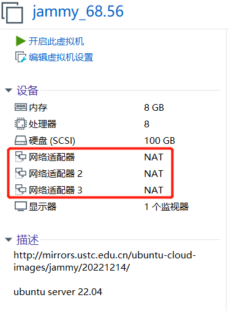
https://www.dpdk.org/
http://doc.dpdk.org/guides-22.11/
编辑对应的 jammy.vmx，修改所有e1000为vmxnet3 ，多队列网卡
ethernet0.virtualDev = "vmxnet3"
ethernet0.wakeOnPcktRcv = "true"
...
ethernet1.virtualDev = "vmxnet3"
ethernet1.wakeOnPcktRcv = "true"
ethernet2.virtualDev = "vmxnet3"
ethernet2.wakeOnPcktRcv = "true"
lshw -c network -businfo
root@jammy:~# ip a
...
2: ens192: <BROADCAST,MULTICAST,UP,LOWER_UP> mtu 1500 qdisc mq state UP group default qlen 1000
link/ether 00:0c:29:9f:04:74 brd ff:ff:ff:ff:ff:ff
altname enp11s0
inet 192.168.68.56/24 brd 192.168.68.255 scope global ens192
valid_lft forever preferred_lft forever
inet6 fe80::20c:29ff:fe9f:474/64 scope link
valid_lft forever preferred_lft forever
3: ens224: <BROADCAST,MULTICAST> mtu 1500 qdisc noop state DOWN group default qlen 1000
link/ether 00:0c:29:9f:04:7e brd ff:ff:ff:ff:ff:ff
altname enp19s0
4: ens256: <BROADCAST,MULTICAST> mtu 1500 qdisc noop state DOWN group default qlen 1000
link/ether 00:0c:29:9f:04:88 brd ff:ff:ff:ff:ff:ff
altname enp27s0
apt install dpdk dpdk-dev -y
vi /etc/default/grub
GRUB_CMDLINE_LINUX="default_hugepagesz=1G hugepagesz=1G hugepages=4 iommu=pt intel_iommu=on"
#GRUB_CMDLINE_LINUX="default_hugepagesz=1G hugepagesz=1G hugepages=4 isolcpus=2-3 iommu=pt intel_iommu=on"
update-grub
# grub2-mkconfig -o /boot/grub2/grub.cfg
reboot
## dmesg | grep -e DMAR -e IOMMU
cat /proc/cmdline | grep -e iommu=pt -e intel_iommu=on -e huge
dmesg| grep -i iommu
cat /proc/meminfo | grep Huge
lscpu | grep NUMA
dpdk-hugepages.py -s
dpdk-devbind.py -s
lshw -businfo -c network
root@dpdk56:~# lshw -businfo -c network
Bus info Device Class Description
====================================================
pci@0000:0b:00.0 ens192 network VMXNET3 Ethernet Controller
pci@0000:13:00.0 ens224 network VMXNET3 Ethernet Controller
pci@0000:1b:00.0 ens256 network VMXNET3 Ethernet Controller
dmesg| grep -i iommu | grep -e 0000:0b:00.0 -e 0000:13:00.0 -e 0000:1b:00.0
root@dpdk56:~# dmesg| grep -i iommu | grep -e 0000:0b:00.0 -e 0000:13:00.0 -e 0000:1b:00.0
[ 2.723136] pci 0000:0b:00.0: Adding to iommu group 6
[ 2.723277] pci 0000:13:00.0: Adding to iommu group 7
[ 2.723432] pci 0000:1b:00.0: Adding to iommu group 8
root@jammy:~ # dpdk-devbind.py -s
Network devices using kernel driver
===================================
0000:0b:00.0 'VMXNET3 Ethernet Controller 07b0' if=ens192 drv=vmxnet3 unused=vfio-pci *Active*
0000:13:00.0 'VMXNET3 Ethernet Controller 07b0' if=ens224 drv=vmxnet3 unused=vfio-pci
0000:1b:00.0 'VMXNET3 Ethernet Controller 07b0' if=ens256 drv=vmxnet3 unused=vfio-pci
dpdk-devbind.py -b vfio-pci 0000:13:00.0 0000:1b:00.0
# dpdk-devbind.py -b vfio-pci 0000:13:00.0
# dpdk-devbind.py -b vfio-pci 0000:1b:00.0
dpdk-devbind.py -s
Network devices using DPDK-compatible driver
============================================
0000:13:00.0 'VMXNET3 Ethernet Controller 07b0' drv=vfio-pci unused=vmxnet3
0000:1b:00.0 'VMXNET3 Ethernet Controller 07b0' drv=vfio-pci unused=vmxnet3
Network devices using kernel driver
===================================
0000:0b:00.0 'VMXNET3 Ethernet Controller 07b0' if=ens192 drv=vmxnet3 unused=vfio-pci *Active*
dpdk-hugepages.py -s
root@jammy:~ # dpdk-hugepages.py -s
Node Pages Size Total
0 4 1Gb 4Gb
Hugepages mounted on /dev/hugepages
### build pkten
export https_proxy=http://10.1.1.12:8118
wget https://github.com/pktgen/Pktgen-DPDK/archive/refs/tags/pktgen-22.07.1.tar.gz
tar zxvf pktgen-22.07.1.tar.gz
cd Pktgen-DPDK-pktgen-22.07.1
meson build
cd build
ninja
编译完毕后的pkten在[Pktgen dir]/build/app/pktgen
## 源码BUILD dpdk
apt install -y build-essential
## pip3 install meson ninja
apt install meson python3-pyelftools pkg-config libnuma-dev
export http_proxy=http://10.1.1.12:8118
wget http://fast.dpdk.org/rel/dpdk-22.11.1.tar.xz
tar Jxvf dpdk-22.11.1.tar.xz
cd dpdk-stable-22.11.1
meson setup -Dexamples=all build
cd build
ninja
# ninja install ### 因为 apt install dpdk dpdk-dev -y
./pktgen -l 1-3 -n 2 -- -T -P -m "2.0,3.1"
-l: 使用CPU Cores 1、2、3
-n: 内存通道
--：此符号前是DPDK的配置参数，此符号后是DPDK Application的配置参数，此处即是Pktgen的参数
-T: 启用彩色文本输出
-P: Enable PROMISCUOUS mode on all ports
-m string: 重点！指定cpu core与NIC的绑定关系，格式参照下图：
VM1 (56) <--------> VM2 (57)
root@dpdk56:~# ip a
2: ens192: <BROADCAST,MULTICAST,UP,LOWER_UP> mtu 1500 qdisc mq state UP group default qlen 1000
link/ether 00:0c:29:9f:04:74 brd ff:ff:ff:ff:ff:ff
altname enp11s0
inet 192.168.68.56/24 brd 192.168.68.255 scope global ens192
valid_lft forever preferred_lft forever
inet6 fe80::20c:29ff:fe9f:474/64 scope link
valid_lft forever preferred_lft forever
3: ens224: <BROADCAST,MULTICAST> mtu 1500 qdisc noop state DOWN group default qlen 1000
link/ether 00:0c:29:9f:04:7e brd ff:ff:ff:ff:ff:ff
altname enp19s0
4: ens256: <BROADCAST,MULTICAST> mtu 1500 qdisc noop state DOWN group default qlen 1000
link/ether 00:0c:29:9f:04:88 brd ff:ff:ff:ff:ff:ff
altname enp27s0
root@dpdk57:~# ip a
2: ens192: <BROADCAST,MULTICAST,UP,LOWER_UP> mtu 1500 qdisc mq state UP group default qlen 1000
link/ether 00:0c:29:22:de:b7 brd ff:ff:ff:ff:ff:ff
altname enp11s0
inet 192.168.68.57/24 brd 192.168.68.255 scope global ens192
valid_lft forever preferred_lft forever
inet6 fe80::20c:29ff:fe22:deb7/64 scope link
valid_lft forever preferred_lft forever
3: ens224: <BROADCAST,MULTICAST> mtu 1500 qdisc noop state DOWN group default qlen 1000
link/ether 00:0c:29:22:de:c1 brd ff:ff:ff:ff:ff:ff
altname enp19s0
4: ens256: <BROADCAST,MULTICAST> mtu 1500 qdisc noop state DOWN group default qlen 1000
link/ether 00:0c:29:22:de:cb brd ff:ff:ff:ff:ff:ff
altname enp27s0
dpdk-devbind.py -b vfio-pci 0000:13:00.0
dpdk-devbind.py -s
00:0c:29:9f:04:7e (vm1 ens224) --- 00:0c:29:22:de:c1 (vm2 ens224)
vm1:
root@dpdk56:~# /root/Pktgen-DPDK-pktgen-22.07.1/build/app/pktgen -l 0-1 -n 3 -- -T -P -m "1.0"
set 0 dst mac 00:0c:29:22:de:c1
set 0 count 100000
str
vm2:
root@dpdk57:~# dpdk-testpmd -l 0-1 -n 1 -- -i
set fwd rxonly
show port stats all
clear port stats all
start
dpdk-l2fwd
vm2:
dpdk-devbind.py -b vfio-pci 0000:13:00.0
dpdk-devbind.py -b vfio-pci 0000:1b:00.0
root@dpdk57:~/dpdk-stable-22.11.1/build/examples# ./dpdk-l2fwd -l 0-3 -n 4 -- -q 1 -p 0x3
vm1:
dpdk-devbind.py -b vfio-pci 0000:13:00.0
root@dpdk56:~# /root/Pktgen-DPDK-pktgen-22.07.1/build/app/pktgen -l 0-1 -n 4 -- -T -P -m "1.0"
set 0 dst mac 00:0c:29:22:de:c1
set 0 count 1000
start 0
vm2: 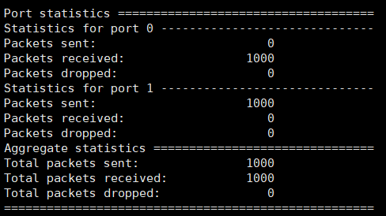
vm1: 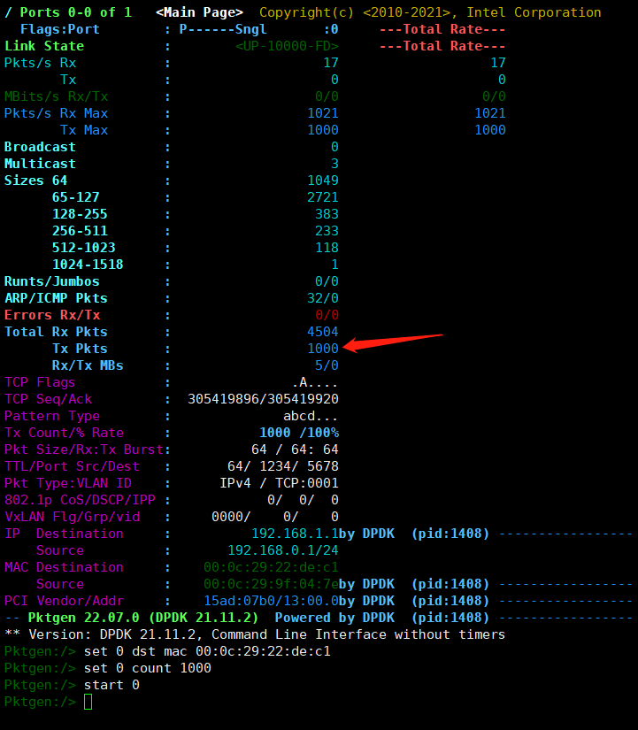
date: 2023-02-04
HOST: 10.1.1.12, guest: j1210 10.1.5.110
root@junnan-gpu:/u01/vms/j1210# more vm.xml
<domain type='kvm'>
<name>j1210</name>
<vcpu current='8'>24</vcpu>
<memory>8388608</memory>
<os>
<type arch='x86_64' machine='pc'>hvm</type>
<bootmenu enable='yes'/>
</os>
<features>
<acpi/>
<apic/>
<pae/>
</features>
<cpu mode="host-passthrough" check="none" migratable="on"/>
<clock offset='utc'/>
<on_poweroff>destroy</on_poweroff>
<on_reboot>restart</on_reboot>
<on_crash>destroy</on_crash>
<devices>
<emulator>/usr/bin/kvm</emulator>
<disk type='file' device='disk'>
<driver name='qemu' type='qcow2'/>
<source file='/u01/vms/j1210/disk'/>
<target dev='vda' bus='virtio'/>
<boot order='1'/>
</disk>
<interface type='bridge'>
<source bridge='br0'/>
<model type='virtio'/>
</interface>
<interface type='network'>
<source network='default'/>
<model type='e1000'/>
</interface>
<interface type='network'>
<source network='default'/>
<model type='e1000'/>
</interface>
<serial type='pty'>
<target port='0'/>
</serial>
<console type='pty'>
<target type='serial' port='0'/>
</console>
<graphics type='vnc' port='-1' autoport='yes' listen='0.0.0.0'/>
<video>
<model type='cirrus' vram='65536' heads='1'/>
</video>
<input type='tablet' bus='usb'/>
<input type='mouse' bus='ps2'/>
</devices>
</domain>
<interface type='bridge'>
<source bridge='br0'/>
<model type='virtio'/>
</interface>
<interface type='network'>
<source network='default'/>
<model type='e1000'/>
</interface>
<interface type='network'>
<source network='default'/>
<model type='e1000'/>
</interface>
vi /etc/default/grub
GRUB_CMDLINE_LINUX="default_hugepagesz=1G hugepagesz=1G hugepages=4"
#GRUB_CMDLINE_LINUX="default_hugepagesz=1G hugepagesz=1G hugepages=4 isolcpus=2-3 iommu=pt intel_iommu=on"
update-grub
apt install dpdk dpdk-dev -y
root@ubuntu:~# dpdk-devbind.py -s
Network devices using kernel driver
===================================
0000:00:03.0 'Virtio network device 1000' if=ens3 drv=virtio-pci unused=vfio-pci *Active*
0000:00:04.0 '82540EM Gigabit Ethernet Controller 100e' if=ens4 drv=e1000 unused=vfio-pci
0000:00:05.0 '82540EM Gigabit Ethernet Controller 100e' if=ens5 drv=e1000 unused=vfio-pci
root@ubuntu:~# dpdk-devbind.py -b vfio-pci 0000:00:04.0
Error: bind failed for 0000:00:04.0 - Cannot bind to driver vfio-pci: [Errno 22] Invalid argument
Error: unbind failed for 0000:00:04.0 - Cannot open /sys/bus/pci/drivers//unbind: [Errno 13] Permission denied: '/sys/bus/pci/drivers//unbind'
root@ubuntu:~# cat /sys/module/vfio/parameters/enable_unsafe_noiommu_mode
N
root@ubuntu:~#
echo 1 > /sys/module/vfio/parameters/enable_unsafe_noiommu_mode
echo 1 > /sys/module/vfio/parameters/enable_unsafe_noiommu_mode
root@ubuntu:~# cat /sys/module/vfio/parameters/enable_unsafe_noiommu_mode
Y
root@ubuntu:~# dpdk-devbind.py -b vfio-pci 0000:00:04.0
root@ubuntu:~# dpdk-devbind.py -b vfio-pci 0000:00:05.0
root@ubuntu:~# dpdk-devbind.py -s
Network devices using DPDK-compatible driver
============================================
0000:00:04.0 '82540EM Gigabit Ethernet Controller 100e' drv=vfio-pci unused=e1000
0000:00:05.0 '82540EM Gigabit Ethernet Controller 100e' drv=vfio-pci unused=e1000
Network devices using kernel driver
===================================
0000:00:03.0 'Virtio network device 1000' if=ens3 drv=virtio-pci unused=vfio-pci *Active*
root@ubuntu:~# dpdk-testpmd -l0-3 -- -i --nb-cores=2 --nb-ports=2 --total-num-mbufs=2048
...
start
...
stop
# top 会看到 2cpu 100%us
或者：
root@ubuntu:~# dpdk-devbind.py -s
Network devices using kernel driver
===================================
0000:00:03.0 'Virtio network device 1000' if=ens3 drv=virtio-pci unused=vfio-pci *Active*
0000:00:04.0 '82540EM Gigabit Ethernet Controller 100e' if=ens4 drv=e1000 unused=vfio-pci
0000:00:05.0 '82540EM Gigabit Ethernet Controller 100e' if=ens5 drv=e1000 unused=vfio-pci
apt install dpdk-kmods-dkms # 安装igb_uio
modprobe igb_uio
root@ubuntu:~# dpdk-devbind.py -s
Network devices using kernel driver
===================================
0000:00:03.0 'Virtio network device 1000' if=ens3 drv=virtio-pci unused=igb_uio,vfio-pci *Active*
0000:00:04.0 '82540EM Gigabit Ethernet Controller 100e' if=ens4 drv=e1000 unused=igb_uio,vfio-pci
0000:00:05.0 '82540EM Gigabit Ethernet Controller 100e' if=ens5 drv=e1000 unused=igb_uio,vfio-pci
root@ubuntu:~# dpdk-devbind.py -b igb_uio 0000:00:04.0
root@ubuntu:~# dpdk-devbind.py -b igb_uio 0000:00:05.0
root@ubuntu:~# dpdk-devbind.py -s
Network devices using DPDK-compatible driver
============================================
0000:00:04.0 '82540EM Gigabit Ethernet Controller 100e' drv=igb_uio unused=e1000,vfio-pci
0000:00:05.0 '82540EM Gigabit Ethernet Controller 100e' drv=igb_uio unused=e1000,vfio-pci
Network devices using kernel driver
===================================
0000:00:03.0 'Virtio network device 1000' if=ens3 drv=virtio-pci unused=igb_uio,vfio-pci *Active*
root@ubuntu:~# dpdk-testpmd -l0-3 -- -i --nb-cores=2 --nb-ports=2 --total-num-mbufs=2048
...
start
...
stop
# top 会看到 2cpu 100%us
# build
apt install build-essential
pip3 install meson ninja
apt install meson python3-pyelftools pkg-config libnuma-dev
wget http://fast.dpdk.org/rel/dpdk-22.11.1.tar.xz
tar Jxvf dpdk-22.11.1.tar.xz
cd dpdk-stable-22.11.1
meson setup -Dexamples=all build
cd build
ninja
ninja install
root@junnan-gpu:~# ll /usr/bin/kvm
lrwxrwxrwx 1 root root 18 12月 8 17:17 /usr/bin/kvm -> qemu-system-x86_64*
root@junnan-gpu:~# qemu-system-x86_64 --version
QEMU emulator version 6.2.0 (Debian 1:6.2+dfsg-2ubuntu6.6)
Copyright (c) 2003-2021 Fabrice Bellard and the QEMU Project developers
root@junnan-gpu:~# qemu-system-x86_64 -device ?
...
Network devices:
name "e1000", bus PCI, alias "e1000-82540em", desc "Intel Gigabit Ethernet"
name "e1000-82544gc", bus PCI, desc "Intel Gigabit Ethernet"
name "e1000-82545em", bus PCI, desc "Intel Gigabit Ethernet"
name "e1000e", bus PCI, desc "Intel 82574L GbE Controller"
name "i82550", bus PCI, desc "Intel i82550 Ethernet"
name "i82551", bus PCI, desc "Intel i82551 Ethernet"
name "i82557a", bus PCI, desc "Intel i82557A Ethernet"
name "i82557b", bus PCI, desc "Intel i82557B Ethernet"
name "i82557c", bus PCI, desc "Intel i82557C Ethernet"
name "i82558a", bus PCI, desc "Intel i82558A Ethernet"
name "i82558b", bus PCI, desc "Intel i82558B Ethernet"
name "i82559a", bus PCI, desc "Intel i82559A Ethernet"
name "i82559b", bus PCI, desc "Intel i82559B Ethernet"
name "i82559c", bus PCI, desc "Intel i82559C Ethernet"
name "i82559er", bus PCI, desc "Intel i82559ER Ethernet"
name "i82562", bus PCI, desc "Intel i82562 Ethernet"
name "i82801", bus PCI, desc "Intel i82801 Ethernet"
name "ne2k_isa", bus ISA
name "ne2k_pci", bus PCI
name "pcnet", bus PCI
name "pvrdma", bus PCI, desc "RDMA Device"
name "rocker", bus PCI, desc "Rocker Switch"
name "rtl8139", bus PCI
name "tulip", bus PCI
name "usb-net", bus usb-bus
name "virtio-net-device", bus virtio-bus
name "virtio-net-pci", bus PCI, alias "virtio-net"
name "virtio-net-pci-non-transitional", bus PCI
name "virtio-net-pci-transitional", bus PCI
name "vmxnet3", bus PCI, desc "VMWare Paravirtualized Ethernet v3"
...
所以可以修改 e1000 --> vmxnet3
<interface type='bridge'>
<source bridge='br0'/>
<model type='vmxnet3'/>
</interface>
<interface type='bridge'>
<source bridge='br0'/>
<model type='vmxnet3'/>
</interface>
<interface type='bridge'>
<source bridge='br0'/>
<model type='vmxnet3'/>
</interface>
# u22.04 10.1.5.161
######### 0.prepare
apt update
apt -y full-upgrade
ln -sf ../usr/share/zoneinfo/Asia/Shanghai /etc/localtime
[ -f /var/run/reboot-required ] && reboot -f
######### 1. 启用rc.local
cat << EOF >> /etc/rc.local
#!/bin/bash
echo 1 > /sys/module/vfio/parameters/enable_unsafe_noiommu_mode
EOF
chmod +x /etc/rc.local
cat << EOF >> /lib/systemd/system/rc-local.service
[Install]
WantedBy=multi-user.target
EOF
cat /lib/systemd/system/rc-local.service
# 启用服务
systemctl enable rc-local
systemctl start rc-local
systemctl status rc-local
# 查看是否成功
cat /sys/module/vfio/parameters/enable_unsafe_noiommu_mode
echo "vfio-pci" > /etc/modules-load.d/95-vpp.conf
######### 2. hugepages
cat <<EOF >> /etc/sysctl.conf
vm.nr_hugepages = 2048
EOF
sysctl -p
######### 3. dpdk
apt install dpdk dpdk-dev -y
dpdk-devbind.py -s
dpdk-devbind.py -b vfio-pci 0000:00:04.0
dpdk-devbind.py -b vfio-pci 0000:00:05.0
root@ubuntu:~# dpdk-devbind.py -s
Network devices using kernel driver
===================================
0000:00:03.0 'VMXNET3 Ethernet Controller 07b0' if=ens3 drv=vmxnet3 unused=vfio-pci *Active*
0000:00:04.0 'VMXNET3 Ethernet Controller 07b0' if=ens4 drv=vmxnet3 unused=vfio-pci
0000:00:05.0 'VMXNET3 Ethernet Controller 07b0' if=ens5 drv=vmxnet3 unused=vfio-pci
root@ubuntu:~# dpdk-devbind.py -s
Network devices using DPDK-compatible driver
============================================
0000:00:04.0 'VMXNET3 Ethernet Controller 07b0' drv=vfio-pci unused=vmxnet3
0000:00:05.0 'VMXNET3 Ethernet Controller 07b0' drv=vfio-pci unused=vmxnet3
Network devices using kernel driver
===================================
0000:00:03.0 'VMXNET3 Ethernet Controller 07b0' if=ens3 drv=vmxnet3 unused=vfio-pci *Active*
apt install docker.io -y
docker pull ubuntu:22.04
cat << EOF > Dockerfile
FROM ubuntu:22.04
RUN sed -i 's/archive.ubuntu.com/mirrors.ustc.edu.cn/g' /etc/apt/sources.list && \
sed -i 's/security.ubuntu.com/mirrors.ustc.edu.cn/g' /etc/apt/sources.list
RUN apt-get update -y && \
apt-get install dpdk kmod -y
EOF
docker build -t amwork2010/dpdk:1 .
docker run --privileged \
-v /sys/bus/pci/devices:/sys/bus/pci/devices \
-v /sys/kernel/mm/hugepages:/sys/kernel/mm/hugepages \
-v /sys/devices/system/node:/sys/devices/system/node \
-v /lib/modules:/lib/modules \
-v /dev:/dev \
-it amwork2010/dpdk:1 bash
docker run --privileged \
-v /lib/modules:/lib/modules \
-it amwork2010/dpdk:1 bash
## 也可以banding , kmod ： the kmod package would provide modinfo, modprobe and other related tools.
root@714c8d6fc89e:/# modprobe vfio-pci
modprobe: FATAL: Module vfio-pci not found in directory /lib/modules/5.15.0-58-generic
so need: -v /lib/modules:/lib/modules
date: 2023-02-04
192.168.68.56、 192.168.68.57
apt install -y openvswitch-switch-dpdk
update-alternatives --set ovs-vswitchd /usr/lib/openvswitch-switch-dpdk/ovs-vswitchd-dpdk
ovs-vswitchd --version
systemctl restart openvswitch-switch.service
root@dpdk56:~# ovs-vswitchd --version
ovs-vswitchd (Open vSwitch) 2.17.3
DPDK 21.11.2
root@dpdk56:~# dpdk-devbind.py -s
Network devices using kernel driver
===================================
0000:0b:00.0 'VMXNET3 Ethernet Controller 07b0' if=ens192 drv=vmxnet3 unused=vfio-pci *Active*
0000:13:00.0 'VMXNET3 Ethernet Controller 07b0' if=ens224 drv=vmxnet3 unused=vfio-pci
0000:1b:00.0 'VMXNET3 Ethernet Controller 07b0' if=ens256 drv=vmxnet3 unused=vfio-pci
dpdk-devbind.py -b vfio-pci 0000:13:00.0 0000:1b:00.0
root@dpdk56:~# dpdk-devbind.py -b vfio-pci 0000:13:00.0 0000:1b:00.0
root@dpdk56:~# dpdk-devbind.py -s
Network devices using DPDK-compatible driver
============================================
0000:13:00.0 'VMXNET3 Ethernet Controller 07b0' drv=vfio-pci unused=vmxnet3
0000:1b:00.0 'VMXNET3 Ethernet Controller 07b0' drv=vfio-pci unused=vmxnet3
ovs-vsctl --no-wait set Open_vSwitch . other_config:dpdk-init=true
ovs-vsctl --no-wait set Open_vSwitch . other_config:dpdk-socket-mem="1024,0" ### 只有一个numa node0
ovs-vsctl --no-wait set Open_vSwitch . other_config:dpdk-lcore-mask=0x2 ### 0b0010 --> Cpu1
ovs-vsctl set Open_vSwitch . other_config:pmd-cpu-mask=0x4 ### 0b0100 --> Cpu2
ovs-vsctl get Open_vSwitch . dpdk_initialized
ovs-vsctl get Open_vSwitch . dpdk_version
# dpdk-init
指定 OVS 是否应该初始化并支持 DPDK 端口。该字段可以是true或try。值true将导致 ovs-vswitchd 进程在初始化失败时中止。值try表示即使 EAL 初始化失败，ovs-vswitchd 进程也应该继续运行。
# dpdk-lcore-mask
指定应该生成 dpdk lcore 线程的 CPU 核心，并需要十六进制字符串（例如“0x123”）。
# dpdk-socket-mem
逗号分隔的内存列表，用于从特定套接字上的大页面中预分配。如果未指定，则默认情况下不会设置此选项。将使用 DPDK 默认值。
# dpdk-hugepage-dir
hugetlbfs挂载目录
# vhost-sock-dir
设置虚拟主机用户 unix 套接字文件路径的选项。
root@dpdk56:~# ovs-vsctl list open_vswitch
_uuid : 6b97fe90-77a5-4a61-a8b6-0b74ed9f803d
bridges : [db9afd87-ad4d-4d1a-842a-3e2eb21abf9e]
cur_cfg : 12
datapath_types : [netdev, system]
datapaths : {}
db_version : "8.3.0"
dpdk_initialized : true
dpdk_version : "DPDK 21.11.2"
external_ids : {hostname=dpdk56, rundir="/var/run/openvswitch", system-id="921fb59b-cbab-4609-929b-875d5dedb844"}
iface_types : [bareudp, dpdk, dpdkvhostuser, dpdkvhostuserclient, erspan, geneve, gre, gtpu, internal, ip6erspan, ip6gre, lisp, patch, stt, system, tap, vxlan]
manager_options : []
next_cfg : 12
other_config : {dpdk-init="true", dpdk-lcore-mask="0x2", dpdk-socket-mem="1024,0", pmd-cpu-mask="0x4"}
ovs_version : "2.17.3"
ssl : []
statistics : {}
system_type : ubuntu
system_version : "22.04"
ovs-vsctl add-br br0 -- set bridge br0 datapath_type=netdev
ovs-vsctl add-port br0 dpdk-p0 -- set Interface dpdk-p0 type=dpdk options:dpdk-devargs=0000:13:00.0
ovs-vsctl add-port br0 dpdk-p1 -- set Interface dpdk-p1 type=dpdk options:dpdk-devargs=0000:1b:00.0
root@dpdk56:~# ovs-vsctl show
6b97fe90-77a5-4a61-a8b6-0b74ed9f803d
Bridge br0
datapath_type: netdev
Port dpdk-p1
Interface dpdk-p1
type: dpdk
options: {dpdk-devargs="0000:1b:00.0"}
Port dpdk-p0
Interface dpdk-p0
type: dpdk
options: {dpdk-devargs="0000:13:00.0"}
Port br0
Interface br0
type: internal
ovs_version: "2.17.3"
借助 pmd 多线程支持，OVS 默认为每个 NUMA 节点创建一个 pmd 线程，前提是该 NUMA 节点至少有一个 DPDK 接口添加到 OVS。
但是，在有多个端口/rxq 产生流量的情况下，可以通过创建在不同内核上运行的多个 pmd 线程来提高性能。
这些 pmd 线程可以通过各自负责不同的端口/rxq 来分担工作量。将端口/rxq 分配给 pmd 线程是自动完成的。
掩码中的设置位意味着创建了一个 pmd 线程并将其固定到相应的 CPU 内核。例如，要在核心 1 和 2 上运行 pmd 线程：0x110 = 0x6
ovs-vsctl set Open_vSwitch . other_config:pmd-cpu-mask=0x6
在 DPDK 端口添加到交换机后，轮询线程不断轮询 DPDK 设备并消耗 100% 的核心，可以从top和 ps命令中检查：
$ top -H
$ ps -eLo pid,psr,comm | grep pmd
# To stop ovs-vswitchd & delete bridge, run:
$ ovs-appctl -t ovs-vswitchd exit
$ ovs-appctl -t ovsdb-server exit
$ ovs-vsctl del-br br0
# 在笔记本T480上，跑一个还勉强，跑2个基本夯住了，跑不动。
date: 2023-02-04
HOST: 10.1.1.12
VM : ovs1:10.1.5.131 ovs2:10.1.5.132
# ovs1:10.1.5.131 ovs2:10.1.5.132
apt update
apt -y full-upgrade
ln -sf ../usr/share/zoneinfo/Asia/Shanghai /etc/localtime
[ -f /var/run/reboot-required ] && reboot -f
######### 1. 启用rc.local
cat << EOF >> /etc/rc.local
#!/bin/bash
echo 1 > /sys/module/vfio/parameters/enable_unsafe_noiommu_mode
EOF
chmod +x /etc/rc.local
cat << EOF >> /lib/systemd/system/rc-local.service
[Install]
WantedBy=multi-user.target
EOF
cat /lib/systemd/system/rc-local.service
# 启用服务
systemctl enable rc-local
systemctl start rc-local
systemctl status rc-local
# 查看是否成功
cat /sys/module/vfio/parameters/enable_unsafe_noiommu_mode
echo "vfio-pci" > /etc/modules-load.d/95-vpp.conf
######### 2. hugepages
cat <<EOF >> /etc/sysctl.conf
vm.nr_hugepages = 1024
EOF
sysctl -p
######### 3. check
apt install driverctl -y
cat /proc/meminfo | grep Huge
lshw -businfo -c network
driverctl list-devices
######### 4. ovs+dpdk
apt install -y openvswitch-switch-dpdk
update-alternatives --set ovs-vswitchd /usr/lib/openvswitch-switch-dpdk/ovs-vswitchd-dpdk
ovs-vswitchd --version
systemctl restart openvswitch-switch.service
root@ovs1:~# ip a
2: ens3: <BROADCAST,MULTICAST,UP,LOWER_UP> mtu 1500 qdisc mq state UP group default qlen 1000
link/ether 52:54:00:3a:2e:71 brd ff:ff:ff:ff:ff:ff
altname enp0s3
inet 10.1.5.131/21 brd 10.1.7.255 scope global ens3
3: ens4: <BROADCAST,MULTICAST> mtu 1500 qdisc noop state DOWN group default qlen 1000
link/ether 52:54:00:c0:e1:75 brd ff:ff:ff:ff:ff:ff
altname enp0s4
4: ens5: <BROADCAST,MULTICAST> mtu 1500 qdisc noop state DOWN group default qlen 1000
link/ether 52:54:00:33:8e:0b brd ff:ff:ff:ff:ff:ff
altname enp0s5
root@ovs2:~# ip a
2: ens3: <BROADCAST,MULTICAST,UP,LOWER_UP> mtu 1500 qdisc mq state UP group default qlen 1000
link/ether 52:54:00:fd:02:a5 brd ff:ff:ff:ff:ff:ff
altname enp0s3
inet 10.1.5.132/21 brd 10.1.7.255 scope global ens3
3: ens4: <BROADCAST,MULTICAST> mtu 1500 qdisc noop state DOWN group default qlen 1000
link/ether 52:54:00:9e:bc:de brd ff:ff:ff:ff:ff:ff
altname enp0s4
4: ens5: <BROADCAST,MULTICAST> mtu 1500 qdisc noop state DOWN group default qlen 1000
link/ether 52:54:00:16:ea:af brd ff:ff:ff:ff:ff:ff
altname enp0s5
root@ovs1:~# dpdk-devbind.py -s
0000:00:03.0 'VMXNET3 Ethernet Controller 07b0' if=ens3 drv=vmxnet3 unused=vfio-pci *Active*
0000:00:04.0 'VMXNET3 Ethernet Controller 07b0' if=ens4 drv=vmxnet3 unused=vfio-pci
0000:00:05.0 'VMXNET3 Ethernet Controller 07b0' if=ens5 drv=vmxnet3 unused=vfio-pci
dpdk-devbind.py -b vfio-pci 0000:00:04.0
root@ovs1:~# dpdk-devbind.py -s
0000:00:04.0 'VMXNET3 Ethernet Controller 07b0' drv=vfio-pci unused=vmxnet3
######### 5. configure ovs dpdk
ovs-vsctl --no-wait set Open_vSwitch . other_config:dpdk-init=true
ovs-vsctl --no-wait set Open_vSwitch . other_config:dpdk-socket-mem="1024,0" ### 只有一个numa node0
ovs-vsctl --no-wait set Open_vSwitch . other_config:dpdk-lcore-mask=0x2 ### 0b0010 --> Cpu1
ovs-vsctl set Open_vSwitch . other_config:pmd-cpu-mask=0x4 ### 0b0100 --> Cpu2
ovs-vsctl get Open_vSwitch . dpdk_initialized
ovs-vsctl get Open_vSwitch . dpdk_version
ovs-vsctl list open_vswitch
# 10.1.5.131
# hwaddr=52:54:00:c0:e1:75 == ens4
ovs-vsctl add-br br-phy -- set Bridge br-phy datapath_type=netdev -- br-set-external-id br-phy bridge-id br-phy -- set bridge br-phy fail-mode=standalone \
other_config:hwaddr=52:54:00:c0:e1:75
ovs-vsctl show
ovs-ofctl show br-phy
ovs-vsctl add-port br-phy dpdk0 -- set Interface dpdk0 type=dpdk options:dpdk-devargs=0000:00:04.0
ip addr add 1.1.1.1/24 dev br-phy
ip link set br-phy up
iperf -s -i 1
# 10.1.5.132
ovs-vsctl add-br br-phy -- set Bridge br-phy datapath_type=netdev -- br-set-external-id br-phy bridge-id br-phy -- set bridge br-phy fail-mode=standalone \
other_config:hwaddr=52:54:00:9e:bc:de
ovs-vsctl show
ovs-ofctl show br-phy
ovs-vsctl add-port br-phy dpdk0 -- set Interface dpdk0 type=dpdk options:dpdk-devargs=0000:00:04.0
ip addr add 1.1.1.2/24 dev br-phy
ip link set br-phy up
iperf -t 10 -i 1 -c 1.1.1.1
#### iperf测试性能只有700-800M，而不用DPDK，iperf测试性能2G左右，why?
root@ovs1:~# ovs-ofctl dump-ports br-phy dpdk0
OFPST_PORT reply (xid=0x4): 1 ports
port dpdk0: rx pkts=532994, bytes=395231512, drop=0, errs=0, frame=?, over=?, crc=?
tx pkts=136677, bytes=9034000, drop=0, errs=0, coll=?
root@ovs1:~#
root@ovs1:~# ovs-ofctl dump-ports br-phy dpdk0
OFPST_PORT reply (xid=0x4): 1 ports
port dpdk0: rx pkts=781948, bytes=771677632, drop=0, errs=0, frame=?, over=?, crc=?
tx pkts=228977, bytes=15129284, drop=0, errs=0, coll=?
root@ovs1:~#
root@ovs1:~# ovs-ofctl dump-ports br-phy dpdk0
OFPST_PORT reply (xid=0x4): 1 ports
port dpdk0: rx pkts=953469, bytes=1031276094, drop=0, errs=0, frame=?, over=?, crc=?
tx pkts=314671, bytes=20785064, drop=0, errs=0, coll=?
root@ovs1:~#
root@ovs1:~# ovs-ofctl dump-ports br-phy dpdk0
OFPST_PORT reply (xid=0x4): 1 ports
port dpdk0: rx pkts=1058565, bytes=1190342002, drop=0, errs=0, frame=?, over=?, crc=?
tx pkts=366688, bytes=24220318, drop=0, errs=0, coll=?
root@ovs1:~#
root@ovs1:~# ovs-ofctl dump-ports br-phy dpdk0
OFPST_PORT reply (xid=0x4): 1 ports
port dpdk0: rx pkts=1088174, bytes=1235080612, drop=0, errs=0, frame=?, over=?, crc=?
tx pkts=381556, bytes=25201606, drop=0, errs=0, coll=?
###### 有数据呀，说明从dpdk走呀，why?
# 1
docker run --name ng1-1 --net=none -p 5001:5001 --privileged=true -d nginx:alpine1
ovs-docker add-port br-phy eth0 ng1-1
docker exec -it ng1-1 ip addr add 1.1.1.11/24 dev eth0
# 2
docker run --name ng2-1 --net=none -p 5001:5001 --privileged=true -d nginx:alpine1
ovs-docker add-port br-phy eth0 ng2-1
docker exec -it ng2-1 ip addr add 1.1.1.12/24 dev eth0
# ovs-docker del-port br0 eth0 ng2-1
可以ping通，但iperf不通
ovs-vsctl add-br br-int -- set Bridge br-int datapath_type=netdev -- br-set-external-id br-int bridge-id br-int -- set bridge br-int fail-mode=standalone
# 1
ovs-vsctl add-port br-int vxlan0 -- set interface vxlan0 type=vxlan options:remote_ip=1.1.1.2
# 2
ovs-vsctl add-port br-int vxlan0 -- set interface vxlan0 type=vxlan options:remote_ip=1.1.1.1
# 1
docker run --name ng1-3 --net=none -p 5001:5001 --privileged=true -d nginx:alpine1
ovs-docker add-port br-int eth0 ng1-3
docker exec -it ng1-3 ip addr add 3.3.3.31/24 dev eth0
# 2
docker run --name ng2-3 --net=none --privileged=true -d nginx:alpine1
ovs-docker add-port br-int eth0 ng2-3
docker exec -it ng2-3 ip addr add 3.3.3.32/24 dev eth0
可以ping通，但iperf不通
ovs-vsctl add-br br1
ovs-vsctl add-port br1 ens5
# 1
ip l s ens5 up
ifconfig br1 2.2.2.1/24 up
# 2
ip l s ens5 up
ifconfig br1 2.2.2.2/24 up
# 1
docker run --name ng1-2 --net=none --privileged=true -d nginx:alpine1
ovs-docker add-port br1 eth0 ng1-2
docker exec -it ng1-2 ip addr add 2.2.2.11/24 dev eth0
# 2
docker run --name ng2-2 --net=none --privileged=true -d nginx:alpine1
ovs-docker add-port br1 eth0 ng2-2
docker exec -it ng2-2 ip addr add 2.2.2.12/24 dev eth0
可以ping通，iperf通，2G左右！
cat << EOF > Dockerfile
FROM nginx:alpine
RUN sed -i 's/dl-cdn.alpinelinux.org/mirrors.ustc.edu.cn/g' /etc/apk/repositories; \\
apk add --no-cache bash iperf tcpdump; \\
rm -rf /var/cache/apk/*;
EOF
docker build -t nginx:alpine1 .
+--------------+
| vm0 | 3.3.3.31/24
+--------------+
(vm_port0)
|
|
|
+--------------+
| br-int | 3.3.3.32/24
+--------------+ +--------------+
| vxlan0 | | vxlan0 |
+--------------+ +--------------+
| |
| |
| |
1.1.1.1/24 |
+--------------+ |
| br-phy | 1.1.1.2/24
+--------------+ +---------------+
| dpdk0/eth1 |----------------------------------| eth1 |
+--------------+ +---------------+
Host A with OVS. Remote host.
https://docs.openvswitch.org/en/latest/howto/userspace-tunneling/
https://github.com/bytedance/ovs-dpdk/blob/open-source/Documentation/howto/userspace-tunneling.rst
https://community.arm.com/arm-community-blogs/b/tools-software-ides-blog/posts/open-vswitch-with-dpdk-on-arm-setup-for-phy-phy-test
date: 2023-02-04
dpdk-devbind.py -b vfio-pci 0000:00:04.0
systemctl restart openvswitch-switch.service
ovs-vsctl show
cat >> /etc/libvirt/qemu.conf << EOF
user = "root"
group = "root"
EOF
systemctl restart libvirtd.service
# 131
ovs-vsctl add-port br-phy vhost-user1 -- set Interface vhost-user1 type=dpdkvhostuser
ovs-vsctl add-port br-phy vhost-user2 -- set Interface vhost-user2 type=dpdkvhostuser
qemu-system-x86_64 -m 1024 -smp 2 -cpu host -hda /root/vms/alpine1/alpine1-virt-3.16.1-x86_64.qcow2 -boot c -enable-kvm -no-reboot -net none -nographic \
-chardev socket,id=char1,path=/run/openvswitch/vhost-user1 \
-netdev type=vhost-user,id=mynet1,chardev=char1,vhostforce=on \
-device virtio-net-pci,mac=00:00:00:00:00:01,netdev=mynet1 \
-object memory-backend-file,id=mem,size=1G,mem-path=/dev/hugepages,share=on \
-numa node,memdev=mem -mem-prealloc \
-vnc :01
qemu-system-x86_64 -m 1024 -smp 2 -cpu host -hda /root/vms/alpine2/alpine2-virt-3.16.1-x86_64.qcow2 -boot c -enable-kvm -no-reboot -net none -nographic \
-chardev socket,id=char2,path=/run/openvswitch/vhost-user2 \
-netdev type=vhost-user,id=mynet2,chardev=char2,vhostforce=on \
-device virtio-net-pci,mac=00:00:00:00:00:02,netdev=mynet2 \
-object memory-backend-file,id=mem,size=1G,mem-path=/dev/hugepages,share=on \
-numa node,memdev=mem -mem-prealloc \
-vnc :02
# 131 vm1 login:
ip a flush eth0
ip addr add 3.3.3.31/24 dev eth0
ip link set eth0 up
iperf3 -s -i 1
# 131 vm2 login:
ip a flush eth0
ip addr add 3.3.3.32/24 dev eth0
ip link set eth0 up
ping -c 5 3.3.3.31
# ping ---> OK
iperf3 -t 10 -i 1 -c 3.3.3.31
alpine:~# iperf3 -t 10 -i 1 -c 3.3.3.31
Connecting to host 3.3.3.31, port 5201
[ 5] local 3.3.3.32 port 58624 connected to 3.3.3.31 port 5201
[ ID] Interval Transfer Bitrate Retr Cwnd
[ 5] 0.00-1.00 sec 604 MBytes 5.07 Gbits/sec 289 386 KBytes
[ 5] 1.00-2.00 sec 768 MBytes 6.44 Gbits/sec 31 354 KBytes
[ 5] 2.00-3.00 sec 811 MBytes 6.80 Gbits/sec 26 359 KBytes
[ 5] 3.00-4.00 sec 774 MBytes 6.49 Gbits/sec 76 358 KBytes
[ 5] 4.00-5.00 sec 808 MBytes 6.78 Gbits/sec 5 380 KBytes
[ 5] 5.00-6.00 sec 805 MBytes 6.75 Gbits/sec 44 290 KBytes
[ 5] 6.00-7.00 sec 810 MBytes 6.80 Gbits/sec 20 438 KBytes
[ 5] 7.00-8.00 sec 814 MBytes 6.83 Gbits/sec 20 389 KBytes
[ 5] 8.00-9.00 sec 791 MBytes 6.64 Gbits/sec 19 361 KBytes
[ 5] 9.00-10.00 sec 803 MBytes 6.74 Gbits/sec 13 334 KBytes
- - - - - - - - - - - - - - - - - - - - - - - - -
[ ID] Interval Transfer Bitrate Retr
[ 5] 0.00-10.00 sec 7.61 GBytes 6.53 Gbits/sec 543 sender
[ 5] 0.00-10.01 sec 7.61 GBytes 6.53 Gbits/sec receiver
## 结论：同一台主机内vm 6G
# 132
ovs-vsctl add-port br-phy vhost-user3 -- set Interface vhost-user3 type=dpdkvhostuser
qemu-system-x86_64 -m 1024 -smp 2 -cpu host -hda /root/alpine-virt-3.16.1-x86_64.qcow2 -boot c -enable-kvm -no-reboot -net none -nographic \
-chardev socket,id=char3,path=/run/openvswitch/vhost-user3 \
-netdev type=vhost-user,id=mynet3,chardev=char3,vhostforce=on \
-device virtio-net-pci,mac=00:00:00:00:00:03,netdev=mynet3 \
-object memory-backend-file,id=mem,size=1G,mem-path=/dev/hugepages,share=on \
-numa node,memdev=mem -mem-prealloc \
-vnc :03
# 132 vm1 login:
ip a flush eth0
ip addr add 3.3.3.33/24 dev eth0
ip link set eth0 up
ping -c 5 3.3.3.31
# ping ---> OK
iperf3 -t 10 -i 1 -c 3.3.3.31
alpine:~# iperf3 -t 10 -i 1 -c 3.3.3.31
Connecting to host 3.3.3.31, port 5201
[ 5] local 3.3.3.33 port 40190 connected to 3.3.3.31 port 5201
[ ID] Interval Transfer Bitrate Retr Cwnd
[ 5] 0.00-1.00 sec 151 MBytes 1.26 Gbits/sec 0 508 KBytes
[ 5] 1.00-2.00 sec 153 MBytes 1.29 Gbits/sec 0 592 KBytes
[ 5] 2.00-3.00 sec 154 MBytes 1.29 Gbits/sec 0 625 KBytes
[ 5] 3.00-4.00 sec 144 MBytes 1.21 Gbits/sec 0 656 KBytes
[ 5] 4.00-5.00 sec 144 MBytes 1.21 Gbits/sec 0 687 KBytes
[ 5] 5.00-6.00 sec 140 MBytes 1.17 Gbits/sec 0 735 KBytes
[ 5] 6.00-7.00 sec 142 MBytes 1.19 Gbits/sec 0 772 KBytes
[ 5] 7.00-8.00 sec 139 MBytes 1.16 Gbits/sec 310 639 KBytes
[ 5] 8.00-9.00 sec 143 MBytes 1.20 Gbits/sec 0 735 KBytes
[ 5] 9.00-10.00 sec 144 MBytes 1.21 Gbits/sec 111 543 KBytes
- - - - - - - - - - - - - - - - - - - - - - - - -
[ ID] Interval Transfer Bitrate Retr
[ 5] 0.00-10.00 sec 1.42 GBytes 1.22 Gbits/sec 421 sender
[ 5] 0.00-10.01 sec 1.42 GBytes 1.22 Gbits/sec receiver
## 结论：不同主机之间 vm 1.2G
# 131 vm1
alpine:~# ip a
1: lo: <LOOPBACK,UP,LOWER_UP> mtu 65536 qdisc noqueue state UNKNOWN qlen 1000
link/loopback 00:00:00:00:00:00 brd 00:00:00:00:00:00
inet 127.0.0.1/8 scope host lo
valid_lft forever preferred_lft forever
inet6 ::1/128 scope host
valid_lft forever preferred_lft forever
2: eth0: <BROADCAST,MULTICAST,UP,LOWER_UP> mtu 1500 qdisc pfifo_fast state UP qlen 1000
link/ether 00:00:00:00:00:01 brd ff:ff:ff:ff:ff:ff
inet 3.3.3.31/24 scope global eth0
valid_lft forever preferred_lft forever
alpine:~# iperf3 -s -i 1
-----------------------------------------------------------
Server listening on 5201 (test #1)
-----------------------------------------------------------
Accepted connection from 3.3.3.32, port 36032
[ 5] local 3.3.3.31 port 5201 connected to 3.3.3.32 port 36034
[ ID] Interval Transfer Bitrate
[ 5] 0.00-1.00 sec 480 MBytes 4.03 Gbits/sec
[ 5] 1.00-2.00 sec 514 MBytes 4.31 Gbits/sec
[ 5] 2.00-3.00 sec 533 MBytes 4.47 Gbits/sec
[ 5] 3.00-4.00 sec 520 MBytes 4.36 Gbits/sec
[ 5] 4.00-5.00 sec 517 MBytes 4.34 Gbits/sec
[ 5] 5.00-6.00 sec 533 MBytes 4.47 Gbits/sec
[ 5] 6.00-7.00 sec 538 MBytes 4.51 Gbits/sec
[ 5] 7.00-8.00 sec 531 MBytes 4.45 Gbits/sec
[ 5] 8.00-9.00 sec 542 MBytes 4.55 Gbits/sec
[ 5] 9.00-10.00 sec 553 MBytes 4.64 Gbits/sec
- - - - - - - - - - - - - - - - - - - - - - - - -
[ ID] Interval Transfer Bitrate
[ 5] 0.00-10.00 sec 5.14 GBytes 4.41 Gbits/sec receiver
-----------------------------------------------------------
Server listening on 5201 (test #2)
-----------------------------------------------------------
Accepted connection from 3.3.3.33, port 50596
[ 5] local 3.3.3.31 port 5201 connected to 3.3.3.33 port 50610
[ ID] Interval Transfer Bitrate
[ 5] 0.00-1.00 sec 143 MBytes 1.20 Gbits/sec
[ 5] 1.00-2.00 sec 151 MBytes 1.27 Gbits/sec
[ 5] 2.00-3.00 sec 154 MBytes 1.29 Gbits/sec
[ 5] 3.00-4.00 sec 155 MBytes 1.30 Gbits/sec
[ 5] 4.00-5.00 sec 156 MBytes 1.31 Gbits/sec
[ 5] 5.00-6.00 sec 151 MBytes 1.27 Gbits/sec
[ 5] 6.00-7.00 sec 154 MBytes 1.29 Gbits/sec
[ 5] 7.00-8.00 sec 155 MBytes 1.30 Gbits/sec
[ 5] 8.00-9.00 sec 156 MBytes 1.30 Gbits/sec
[ 5] 9.00-10.00 sec 154 MBytes 1.29 Gbits/sec
- - - - - - - - - - - - - - - - - - - - - - - - -
[ ID] Interval Transfer Bitrate
[ 5] 0.00-10.01 sec 1.49 GBytes 1.28 Gbits/sec receiver
-----------------------------------------------------------
Server listening on 5201 (test #3)
-----------------------------------------------------------
### 131
ovs-vsctl add-br br0
ovs-vsctl add-port br0 ens5
qemu-system-x86_64 -m 1024 -net nic,macaddr=00:00:00:00:01:01 -net tap -drive file=/root/alpine-virt-3.16.1-x86_64.qcow2 -boot c -enable-kvm -no-reboot -nographic
ovs-vsctl add-port br0 tap0
ip a flush eth0
ip addr add 2.2.2.21/24 dev eth0
ip link set eth0 up
iperf3 -s -i 1
qemu-system-x86_64 -m 1024 -net nic,macaddr=00:00:00:00:01:02 -net tap -drive file=/root/alpine2-virt-3.16.1-x86_64.qcow2 -boot c -enable-kvm -no-reboot -nographic
ovs-vsctl add-port br0 tap1
ip a flush eth0
ip addr add 2.2.2.22/24 dev eth0
ip link set eth0 up
iperf3 -t 10 -i 1 -c 2.2.2.21
alpine:~# iperf3 -t 10 -i 1 -c 2.2.2.21
Connecting to host 2.2.2.21, port 5201
[ 5] local 2.2.2.22 port 34292 connected to 2.2.2.21 port 5201
[ ID] Interval Transfer Bitrate Retr Cwnd
[ 5] 0.00-1.00 sec 91.9 MBytes 770 Mbits/sec 0 1.33 MBytes
[ 5] 1.00-2.01 sec 73.8 MBytes 612 Mbits/sec 0 1.57 MBytes
[ 5] 2.01-3.00 sec 82.5 MBytes 699 Mbits/sec 0 1.99 MBytes
[ 5] 3.00-4.02 sec 62.5 MBytes 516 Mbits/sec 0 1.99 MBytes
[ 5] 4.02-5.00 sec 85.0 MBytes 723 Mbits/sec 0 2.20 MBytes
[ 5] 5.00-6.01 sec 72.5 MBytes 605 Mbits/sec 0 2.20 MBytes
[ 5] 6.01-7.01 sec 71.2 MBytes 595 Mbits/sec 0 2.20 MBytes
[ 5] 7.01-8.00 sec 144 MBytes 1.22 Gbits/sec 265 1.43 MBytes
[ 5] 8.00-9.00 sec 149 MBytes 1.25 Gbits/sec 0 1.52 MBytes
[ 5] 9.00-10.00 sec 150 MBytes 1.26 Gbits/sec 0 1.59 MBytes
- - - - - - - - - - - - - - - - - - - - - - - - -
[ ID] Interval Transfer Bitrate Retr
[ 5] 0.00-10.00 sec 982 MBytes 824 Mbits/sec 265 sender
[ 5] 0.00-10.02 sec 979 MBytes 820 Mbits/sec receiver
## 结论：同一台主机内vm 1G
ip l s ens5 up
ip l s br0 up
ip addr add 2.2.2.1/24 dev br0
### 132
qemu-system-x86_64 -m 1024 -net nic,macaddr=00:00:00:00:01:03 -net tap -drive file=/root/alpine-virt-3.16.1-x86_64.qcow2 -boot c -enable-kvm -no-reboot -nographic
ovs-vsctl add-port br0 tap0
ip a flush eth0
ip addr add 2.2.2.23/24 dev eth0
ip link set eth0 up
ping 2.2.2.21 不通 ### ens5 br0 up
ip l s ens5 up
ip l s br0 up
ip addr add 2.2.2.2/24 dev br0
alpine:~# iperf3 -t 10 -i 1 -c 2.2.2.21
Connecting to host 2.2.2.21, port 5201
[ 5] local 2.2.2.23 port 40028 connected to 2.2.2.21 port 5201
[ ID] Interval Transfer Bitrate Retr Cwnd
[ 5] 0.00-1.04 sec 23.8 MBytes 191 Mbits/sec 0 1.08 MBytes
[ 5] 1.04-2.01 sec 22.5 MBytes 195 Mbits/sec 0 1.08 MBytes
[ 5] 2.01-3.01 sec 22.5 MBytes 189 Mbits/sec 0 1.08 MBytes
[ 5] 3.01-4.00 sec 22.5 MBytes 191 Mbits/sec 0 1.08 MBytes
[ 5] 4.00-5.01 sec 22.5 MBytes 188 Mbits/sec 0 1.08 MBytes
[ 5] 5.01-6.01 sec 23.8 MBytes 199 Mbits/sec 0 1.08 MBytes
[ 5] 6.01-7.04 sec 25.0 MBytes 203 Mbits/sec 0 1.08 MBytes
[ 5] 7.04-8.04 sec 22.5 MBytes 188 Mbits/sec 0 1.08 MBytes
[ 5] 8.04-9.04 sec 23.1 MBytes 195 Mbits/sec 0 1.13 MBytes
[ 5] 9.04-10.05 sec 22.5 MBytes 187 Mbits/sec 0 1.13 MBytes
- - - - - - - - - - - - - - - - - - - - - - - - -
[ ID] Interval Transfer Bitrate Retr
[ 5] 0.00-10.05 sec 231 MBytes 193 Mbits/sec 0 sender
[ 5] 0.00-10.05 sec 231 MBytes 192 Mbits/sec receiver
## 结论：不同主机之间 vm 190M
root@ovs1:~/vms/alpine1# cat vm.xml
<domain type='kvm'>
<name>alpine1</name>
<vcpu placement='static'>2</vcpu>
<memory>1048576</memory>
<memoryBacking>
<hugepages>
<page size='2048' unit='KiB'/>
</hugepages>
</memoryBacking>
<os>
<type arch='x86_64' machine='pc'>hvm</type>
<bootmenu enable='yes'/>
</os>
<features>
<acpi/>
<apic/>
<pae/>
</features>
<cpu mode="host-passthrough">
<numa>
<cell id='0' cpus='0-1' memory='1048576' unit='KiB' memAccess='shared'/>
</numa>
</cpu>
<clock offset='utc'/>
<on_poweroff>destroy</on_poweroff>
<on_reboot>restart</on_reboot>
<on_crash>destroy</on_crash>
<devices>
<emulator>/usr/bin/kvm</emulator>
<disk type='file' device='disk'>
<driver name='qemu' type='qcow2'/>
<source file='/root/vms/alpine1/alpine1-virt-3.16.1-x86_64.qcow2'/>
<target dev='vda' bus='virtio'/>
<boot order='1'/>
</disk>
<interface type='vhostuser'>
<mac address='00:00:00:00:00:01'/>
<source type='unix' path='/run/openvswitch/vhost-user1' mode='client'/>
<target dev='vnet1'/>
<model type='virtio'/>
<driver queues='2'>
<host mrg_rxbuf='off'/>
</driver>
</interface>
<serial type='pty'>
<target port='0'/>
</serial>
<console type='pty'>
<target type='serial' port='0'/>
</console>
<graphics type='vnc' port='-1' autoport='yes' listen='0.0.0.0'/>
<video>
<model type='cirrus' vram='65536' heads='1'/>
</video>
<input type='tablet' bus='usb'/>
<input type='mouse' bus='ps2'/>
</devices>
</domain>
root@ovs1:~/vms/alpine1# cat /var/log/libvirt/qemu/alpine1.log
2023-01-12 22:27:56.091+0000: starting up libvirt version: 8.0.0, package: 1ubuntu7.4 (Christian Ehrhardt <christian.ehrhardt@canonical.com> Tue, 22 Nov 2022 15:59:28 +0100), qemu version: 6.2.0Debian 1:6.2+dfsg-2ubuntu6.6, kernel: 5.15.0-57-generic, hostname: ovs1
LC_ALL=C \
PATH=/usr/local/sbin:/usr/local/bin:/usr/sbin:/usr/bin:/sbin:/bin:/snap/bin \
HOME=/var/lib/libvirt/qemu/domain-7-alpine1 \
XDG_DATA_HOME=/var/lib/libvirt/qemu/domain-7-alpine1/.local/share \
XDG_CACHE_HOME=/var/lib/libvirt/qemu/domain-7-alpine1/.cache \
XDG_CONFIG_HOME=/var/lib/libvirt/qemu/domain-7-alpine1/.config \
/usr/bin/kvm \
-name guest=alpine1,debug-threads=on \
-S \
-object '{"qom-type":"secret","id":"masterKey0","format":"raw","file":"/var/lib/libvirt/qemu/domain-7-alpine1/master-key.aes"}' \
-machine pc-i440fx-6.2,usb=off,dump-guest-core=off \
-accel kvm \
-cpu host,migratable=on \
-m 1024 \
-overcommit mem-lock=off \
-smp 2,sockets=2,cores=1,threads=1 \
-object '{"qom-type":"memory-backend-file","id":"ram-node0","mem-path":"/dev/hugepages/libvirt/qemu/7-alpine1","share":true,"prealloc":true,"size":1073741824}' \
-numa node,nodeid=0,cpus=0-1,memdev=ram-node0 \
-uuid fd61bba1-7b26-4f1d-a612-5fca2a6358e6 \
-no-user-config \
-nodefaults \
-chardev socket,id=charmonitor,fd=32,server=on,wait=off \
-mon chardev=charmonitor,id=monitor,mode=control \
-rtc base=utc \
-no-shutdown \
-boot menu=on,strict=on \
-device piix3-usb-uhci,id=usb,bus=pci.0,addr=0x1.0x2 \
-blockdev '{"driver":"file","filename":"/root/vms/alpine1/alpine1-virt-3.16.1-x86_64.qcow2","node-name":"libvirt-1-storage","auto-read-only":true,"discard":"unmap"}' \
-blockdev '{"node-name":"libvirt-1-format","read-only":false,"driver":"qcow2","file":"libvirt-1-storage","backing":null}' \
-device virtio-blk-pci,bus=pci.0,addr=0x4,drive=libvirt-1-format,id=virtio-disk0,bootindex=1 \
-chardev socket,id=charnet0,path=/run/openvswitch/vhost-user1 \
-netdev vhost-user,chardev=charnet0,queues=2,id=hostnet0 \
-device virtio-net-pci,mrg_rxbuf=off,mq=on,vectors=6,netdev=hostnet0,id=net0,mac=00:00:00:00:00:01,bus=pci.0,addr=0x3 \
-chardev pty,id=charserial0 \
-device isa-serial,chardev=charserial0,id=serial0 \
-device usb-tablet,id=input0,bus=usb.0,port=1 \
-audiodev '{"id":"audio1","driver":"none"}' \
-vnc 0.0.0.0:0,audiodev=audio1 \
-device cirrus-vga,id=video0,bus=pci.0,addr=0x2 \
-device virtio-balloon-pci,id=balloon0,bus=pci.0,addr=0x5 \
-sandbox on,obsolete=deny,elevateprivileges=deny,spawn=deny,resourcecontrol=deny \
-msg timestamp=on
char device redirected to /dev/pts/1 (label charserial0)
2023-01-12T22:50:38.845268Z kvm: terminating on signal 15 from pid 1032 (/usr/sbin/libvirtd)
2023-01-12 22:50:39.047+0000: shutting down, reason=destroyed
-chardev socket,id=charnet0,path=/run/openvswitch/vhost-user1 \
-netdev vhost-user,chardev=charnet0,queues=2,id=hostnet0 \
-device virtio-net-pci,mrg_rxbuf=off,mq=on,vectors=6,netdev=hostnet0,id=net0,mac=00:00:00:00:00:01,bus=pci.0,addr=0x3 \
### xml 生成的 id 都是一样的，无法修改，所以vhost-user模式下，启动2台虚拟机会冲突，用qemu-system-x86_64 指定不同的id等启动才行。
id=charnet0
netdev=hostnet0
date: 2023-02-04
https://libvirt.org/formatdomain.html
https://docs.openvswitch.org/en/latest/topics/dpdk/vhost-user/
# Open vSwitch provides two types of vHost User ports:
. vhost-user (dpdkvhostuser) ---> deprecated!
. vhost-user-client (dpdkvhostuserclient)
# Ports of type vhost-user are currently deprecated and will be removed in a future release.
# https://libvirt.org/formatdomain.html
# 133
hostnamectl set-hostname ovs3
ip a
2: ens3: <BROADCAST,MULTICAST,UP,LOWER_UP> mtu 1500 qdisc mq state UP group default qlen 1000
link/ether 52:54:00:55:b6:f4 brd ff:ff:ff:ff:ff:ff
altname enp0s3
inet 10.1.5.133/21 brd 10.1.7.255 scope global ens3
3: ens4: <BROADCAST,MULTICAST> mtu 1500 qdisc noop state DOWN group default qlen 1000
link/ether 52:54:00:56:79:6c brd ff:ff:ff:ff:ff:ff
altname enp0s4
4: ens5: <BROADCAST,MULTICAST> mtu 1500 qdisc noop state DOWN group default qlen 1000
link/ether 52:54:00:f7:61:4d brd ff:ff:ff:ff:ff:ff
altname enp0s5
# 134
hostnamectl set-hostname ovs4
ip a
2: ens3: <BROADCAST,MULTICAST,UP,LOWER_UP> mtu 1500 qdisc mq state UP group default qlen 1000
link/ether 52:54:00:9b:e5:3d brd ff:ff:ff:ff:ff:ff
altname enp0s3
inet 10.1.5.134/21 brd 10.1.7.255 scope global ens3
3: ens4: <BROADCAST,MULTICAST> mtu 1500 qdisc noop state DOWN group default qlen 1000
link/ether 52:54:00:5a:1e:4b brd ff:ff:ff:ff:ff:ff
altname enp0s4
4: ens5: <BROADCAST,MULTICAST> mtu 1500 qdisc noop state DOWN group default qlen 1000
link/ether 52:54:00:54:30:07 brd ff:ff:ff:ff:ff:ff
altname enp0s5
cat <<EOF >> /etc/sysctl.conf
vm.nr_hugepages = 2048
EOF
sysctl -p
dpdk-devbind.py -s
Network devices using kernel driver
===================================
0000:00:03.0 'VMXNET3 Ethernet Controller 07b0' if=ens3 drv=vmxnet3 unused=vfio-pci *Active*
0000:00:04.0 'VMXNET3 Ethernet Controller 07b0' if=ens4 drv=vmxnet3 unused=vfio-pci
0000:00:05.0 'VMXNET3 Ethernet Controller 07b0' if=ens5 drv=vmxnet3 unused=vfio-pci
dpdk-devbind.py -b vfio-pci 0000:00:04.0
ovs-vsctl --no-wait set Open_vSwitch . other_config:dpdk-init=true
ovs-vsctl --no-wait set Open_vSwitch . other_config:dpdk-socket-mem="1024,0" ### 只有一个numa node0
ovs-vsctl --no-wait set Open_vSwitch . other_config:dpdk-lcore-mask=0x2 ### 0b0010 --> Cpu1
ovs-vsctl set Open_vSwitch . other_config:pmd-cpu-mask=0x4 ### 0b0100 --> Cpu2
ovs-vsctl get Open_vSwitch . dpdk_initialized
ovs-vsctl get Open_vSwitch . dpdk_version
ovs-vsctl list open_vswitch
# 10.1.5.133
ovs-vsctl add-br br-phy -- set Bridge br-phy datapath_type=netdev -- br-set-external-id br-phy bridge-id br-phy -- set bridge br-phy fail-mode=standalone \
other_config:hwaddr=52:54:00:56:79:6c
ovs-vsctl show
ovs-ofctl show br-phy
ovs-vsctl add-port br-phy dpdk0 -- set Interface dpdk0 type=dpdk options:dpdk-devargs=0000:00:04.0
ovs-vsctl show
# 10.1.5.134
ovs-vsctl add-br br-phy -- set Bridge br-phy datapath_type=netdev -- br-set-external-id br-phy bridge-id br-phy -- set bridge br-phy fail-mode=standalone \
other_config:hwaddr=52:54:00:5a:1e:4b
ovs-vsctl show
ovs-ofctl show br-phy
ovs-vsctl add-port br-phy dpdk0 -- set Interface dpdk0 type=dpdk options:dpdk-devargs=0000:00:04.0
ovs-vsctl show
# both
apt update && apt install -y qemu-kvm virt-manager libvirt-daemon-system virtinst libvirt-clients qemu-utils bridge-utils iperf tcpdump uml-utilities
cat >> /etc/libvirt/qemu.conf << EOF
user = "root"
group = "root"
EOF
systemctl restart libvirtd.service
# 133
ovs-vsctl add-port br-phy dpdkvhostclient0 -- set Interface dpdkvhostclient0 type=dpdkvhostuserclient options:vhost-server-path=/run/openvswitch/dpdkvhostclient0
ovs-vsctl add-port br-phy dpdkvhostclient1 -- set Interface dpdkvhostclient1 type=dpdkvhostuserclient options:vhost-server-path=/run/openvswitch/dpdkvhostclient1
qemu-system-x86_64 -m 1024 -smp 2 -cpu host -hda /root/vms/alpine1/alpine1-virt-3.16.1-x86_64.qcow2 -boot c -enable-kvm -no-reboot -net none -nographic \
-chardev socket,id=char1,path=/run/openvswitch/dpdkvhostclient0,server=on \
-netdev type=vhost-user,id=mynet1,chardev=char1,vhostforce=on \
-device virtio-net-pci,mac=00:00:00:00:33:01,netdev=mynet1 \
-object memory-backend-file,id=mem,size=1G,mem-path=/dev/hugepages,share=on \
-numa node,memdev=mem -mem-prealloc \
-vnc :01
qemu-system-x86_64 -m 1024 -smp 2 -cpu host -hda /root/vms/alpine2/alpine2-virt-3.16.1-x86_64.qcow2 -boot c -enable-kvm -no-reboot -net none -nographic \
-chardev socket,id=char2,path=/run/openvswitch/dpdkvhostclient1,server=on \
-netdev type=vhost-user,id=mynet2,chardev=char2,vhostforce=on \
-device virtio-net-pci,mac=00:00:00:00:33:02,netdev=mynet2 \
-object memory-backend-file,id=mem,size=1G,mem-path=/dev/hugepages,share=on \
-numa node,memdev=mem -mem-prealloc \
-vnc :02
# 133 vm1 login:
ip a flush eth0
ip addr add 3.3.3.31/24 dev eth0
ip link set eth0 up
iperf3 -s -i 1
# 133 vm2 login:
ip a flush eth0
ip addr add 3.3.3.32/24 dev eth0
ip link set eth0 up
ping -c 5 3.3.3.31
# ping ---> OK
iperf3 -t 10 -i 1 -c 3.3.3.31
## 结论：同一台主机内vm 6G
# 134
ovs-vsctl add-port br-phy dpdkvhostclient3 -- set Interface dpdkvhostclient3 type=dpdkvhostuserclient options:vhost-server-path=/run/openvswitch/dpdkvhostclient3
qemu-system-x86_64 -m 1024 -smp 2 -cpu host -hda /root/vms/alpine3/alpine3-virt-3.16.1-x86_64.qcow2 -boot c -enable-kvm -no-reboot -net none -nographic \
-chardev socket,id=char3,path=/run/openvswitch/dpdkvhostclient3,server=on \
-netdev type=vhost-user,id=mynet3,chardev=char3,vhostforce=on \
-device virtio-net-pci,mac=00:00:00:00:00:03,netdev=mynet3 \
-object memory-backend-file,id=mem,size=1G,mem-path=/dev/hugepages,share=on \
-numa node,memdev=mem -mem-prealloc \
-vnc :03
# 134 vm1 login:
ip a flush eth0
ip addr add 3.3.3.33/24 dev eth0
ip link set eth0 up
ping -c 5 3.3.3.31
# ping ---> OK
iperf3 -t 10 -i 1 -c 3.3.3.31
## 结论：不同主机之间 vm 1.2G
root@ovs3:~/vms/alpine1# cat vm.xml
<domain type='kvm'>
<name>alpine1</name>
<vcpu placement='static'>2</vcpu>
<memory>1048576</memory>
<memoryBacking>
<hugepages>
<page size='2048' unit='KiB'/>
</hugepages>
</memoryBacking>
<os>
<type arch='x86_64' machine='pc'>hvm</type>
<bootmenu enable='yes'/>
</os>
<features>
<acpi/>
<apic/>
<pae/>
</features>
<cpu mode="host-passthrough">
<numa>
<cell id='0' cpus='0-1' memory='1048576' unit='KiB' memAccess='shared'/>
</numa>
</cpu>
<clock offset='utc'/>
<on_poweroff>destroy</on_poweroff>
<on_reboot>restart</on_reboot>
<on_crash>destroy</on_crash>
<devices>
<emulator>/usr/bin/kvm</emulator>
<disk type='file' device='disk'>
<driver name='qemu' type='qcow2'/>
<source file='/root/vms/alpine1/alpine1-virt-3.16.1-x86_64.qcow2'/>
<target dev='vda' bus='virtio'/>
<boot order='1'/>
</disk>
<interface type='vhostuser'>
<mac address='00:00:00:00:33:01'/>
<source type='unix' path='/run/openvswitch/dpdkvhostclient0' mode='server'/>
<model type='virtio'/>
<driver queues='2'>
<host mrg_rxbuf='off'/>
</driver>
</interface>
<serial type='pty'>
<target port='0'/>
</serial>
<console type='pty'>
<target type='serial' port='0'/>
</console>
<graphics type='vnc' port='-1' autoport='yes' listen='0.0.0.0'/>
<video>
<model type='cirrus' vram='65536' heads='1'/>
</video>
<input type='tablet' bus='usb'/>
<input type='mouse' bus='ps2'/>
</devices>
</domain>
### xml 生成的 id 都是一样的，无法修改，所以vhost-user模式下，启动2台虚拟机会冲突，用qemu-system-x86_64 指定不同的id等启动才行。
### dpdkvhostuserclient模式下，2台虚拟机可以互相ping通，但iperf3测试，同一台主机内vm 3G，比指定id，性能差了一倍，说明还是有冲突。
### reboot
dpdk-devbind.py -b vfio-pci 0000:00:04.0
systemctl restart openvswitch-switch.service
ovs-vsctl show
###
vi /etc/rc.local
#!/bin/bash
echo 1 > /sys/module/vfio/parameters/enable_unsafe_noiommu_mode
dpdk-devbind.py -b vfio-pci 0000:00:04.0
systemctl restart openvswitch-switch.service
### 下面方式不好用！why？
vi /lib/systemd/system/openvswitch-switch.service
ExecStartPre=-/usr/bin/echo 1 > /sys/module/vfio/parameters/enable_unsafe_noiommu_mode
ExecStartPre=-/sbin/modprobe vfio-pci
ExecStartPre=-/usr/bin/dpdk-devbind.py -b vfio-pci 0000:00:04.0
ExecStart=/bin/true
systemctl daemon-reload && systemctl restart openvswitch-switch
systemctl status openvswitch-switch
date: 2023-02-04
DPDK_in_Containers_Hands-on_Lab
https://github.com/intel/SDN-NFV-Hands-on-Samples/tree/master/DPDK_in_Containers_Hands-on_Lab
vmware : 192.168.68.56 u22.04
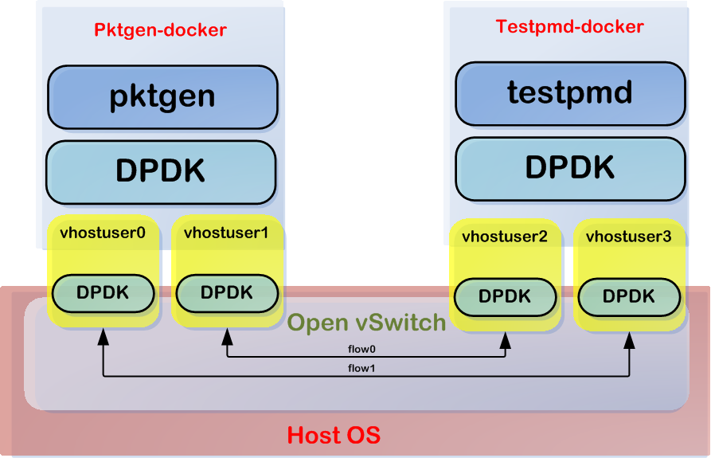
vi /etc/default/grub
GRUB_CMDLINE_LINUX="default_hugepagesz=1G hugepagesz=1G hugepages=8 iommu=pt intel_iommu=on"
update-grub
reboot
# hugepages=4 同时运行pktgen, dpdk-testpmd报错！
root@dpdk56:~# dpdk-hugepages.py -s
Node Pages Size Total
0 5 1Gb 5Gb
Hugepages mounted on /dev/hugepages
## no 8G -> 5G 实际 5G ## vm内存修改为16G
apt install -y openvswitch-switch-dpdk
update-alternatives --set ovs-vswitchd /usr/lib/openvswitch-switch-dpdk/ovs-vswitchd-dpdk
ovs-vswitchd --version
systemctl restart openvswitch-switch.service
ovs-vsctl --no-wait set Open_vSwitch . other_config:dpdk-init=true
ovs-vsctl --no-wait set Open_vSwitch . other_config:dpdk-socket-mem="1024,0" ### 只有一个numa node0
ovs-vsctl --no-wait set Open_vSwitch . other_config:dpdk-lcore-mask=0x2 ### 0b0010 --> Cpu1
ovs-vsctl set Open_vSwitch . other_config:pmd-cpu-mask=0x4 ### 0b0100 --> Cpu2
ovs-vsctl add-br br0 -- set bridge br0 datapath_type=netdev
ovs-vsctl add-port br0 vhost-user1 -- set Interface vhost-user1 type=dpdkvhostuser
ovs-vsctl add-port br0 vhost-user2 -- set Interface vhost-user2 type=dpdkvhostuser
ovs-vsctl add-port br0 vhost-user3 -- set Interface vhost-user3 type=dpdkvhostuser
ovs-vsctl add-port br0 vhost-user4 -- set Interface vhost-user4 type=dpdkvhostuser
ovs-vsctl show
ovs-ofctl show br0
# 不加也可以
# echo never > /sys/kernel/mm/transparent_hugepage/enabled
# echo never > /sys/kernel/mm/transparent_hugepage/defrag
ls -l /var/run/openvswitch/|grep vhost-user
srwxr-xr-x 1 root root 0 Dec 30 16:13 vhost-user1
srwxr-xr-x 1 root root 0 Dec 30 16:13 vhost-user2
srwxr-xr-x 1 root root 0 Dec 30 16:13 vhost-user3
srwxr-xr-x 1 root root 0 Dec 30 16:13 vhost-user4
ovs-ofctl del-flows br0
echo "(Add bi-directional flow vhost-user2 and vhost-user3)"
ovs-ofctl add-flow br0 in_port=2,dl_type=0x800,idle_timeout=0,action=output:3
ovs-ofctl add-flow br0 in_port=3,dl_type=0x800,idle_timeout=0,action=output:2
echo "(Add bi-directional flow between vhost-user1 and vhost-user4)"
ovs-ofctl add-flow br0 in_port=1,dl_type=0x800,idle_timeout=0,action=output:4
ovs-ofctl add-flow br0 in_port=4,dl_type=0x800,idle_timeout=0,action=output:1
ovs-ofctl dump-flows br0
echo "Showing OpenFlow to Open vSwitch port mapping:"
ovs-ofctl show br0
ovs-ofctl dump-ports br0
build dpdk-docker, (包含dpdk-testpmd，没有dpdk-l2fwd)
cat << EOF > Dockerfile
FROM ubuntu:22.04
RUN sed -i 's/archive.ubuntu.com/mirrors.ustc.edu.cn/g' /etc/apt/sources.list
RUN sed -i 's/security.ubuntu.com/mirrors.ustc.edu.cn/g' /etc/apt/sources.list
RUN ln -sf ../usr/share/zoneinfo/Asia/Shanghai /etc/localtime
RUN apt-get update && apt-get install -y dpdk dpdk-dev iperf tcpdump
WORKDIR /root
RUN apt-get -qq clean && rm -rf /var/lib/apt/lists/* /tmp/* /var/tmp/*
CMD ["/bin/bash"]
EOF
docker build -t amwork2010/dpdk:u2204 .
##### 源码build dpdk-docker, (包含dpdk-testpmd，包含dpdk-l2fwd)
cat << EOF > Dockerfile
FROM ubuntu:22.04
RUN sed -i 's/archive.ubuntu.com/mirrors.ustc.edu.cn/g' /etc/apt/sources.list
RUN sed -i 's/security.ubuntu.com/mirrors.ustc.edu.cn/g' /etc/apt/sources.list
RUN ln -sf ../usr/share/zoneinfo/Asia/Shanghai /etc/localtime
RUN apt update && apt install -y build-essential
RUN apt install -y meson python3-pyelftools pkg-config libnuma-dev wget
WORKDIR /root
RUN wget http://fast.dpdk.org/rel/dpdk-22.11.1.tar.xz
RUN tar Jxvf dpdk-22.11.1.tar.xz
RUN cd dpdk-stable-22.11.1 && meson setup -Dexamples=all build && cd build && ninja && ninja install
RUN apt-get -qq clean && rm -rf /var/lib/apt/lists/* /tmp/* /var/tmp/*
CMD ["/bin/bash"]
EOF
docker build -t amwork2010/dpdk:22.11 .
build dpdk-pktgen
cat << EOF > Dockerfile
FROM ubuntu:22.04
RUN sed -i 's/archive.ubuntu.com/mirrors.ustc.edu.cn/g' /etc/apt/sources.list
RUN sed -i 's/security.ubuntu.com/mirrors.ustc.edu.cn/g' /etc/apt/sources.list
RUN ln -sf ../usr/share/zoneinfo/Asia/Shanghai /etc/localtime
RUN apt update && apt install -y build-essential meson python3-pyelftools pkg-config libnuma-dev wget dpdk dpdk-dev
WORKDIR /root
RUN wget https://github.com/pktgen/Pktgen-DPDK/archive/refs/tags/pktgen-22.07.1.tar.gz
RUN tar zxvf pktgen-22.07.1.tar.gz
RUN cd Pktgen-DPDK-pktgen-22.07.1 && meson build && cd build && ninja
RUN cp /root/Pktgen-DPDK-pktgen-22.07.1/build/app/pktgen /usr/bin
RUN apt-get -qq clean && rm -rf /var/lib/apt/lists/* /tmp/* /var/tmp/*
CMD ["/bin/bash"]
EOF
docker build -t amwork2010/pktgen:22.07 .
run dpdk-testpmd
docker run -it --rm --privileged \
-v /dev/hugepages:/dev/hugepages -v /var/run/openvswitch:/var/run/openvswitch amwork2010/dpdk:u2204
#-c 0xE0: DPDK can run on core 5-7: (0b1110 0000)--> Cpu6 Cpu7
#--main-lcore 5: make the make the master testpmd thread run on core 5 (0b0010 0000)
#-n 1: we only have one memory bank in this VM
#--file-prefix testpmd: "testpmd" will be appended to hugepage memory files used by this process
#--no-pci don't look for any PCI devices
#--vdev=net_virtio_user3,mac=00:00:00:00:00:03,path=/var/run/openvswitch/vhost-user3
#--vdev=net_virtio_user4,mac=00:00:00:00:00:04,path=/var/run/openvswitch/vhost-user4:
# use a virtual
# device using the net_virtio_user driver, MAC address 00:00:00:00:00:03, and the path to the
# unix socket is /var/run/openvswitch/vhost-user3
dpdk-testpmd -c 0xE0 -n 1 --socket-mem 1024 --file-prefix testpmd --no-pci \
--vdev 'net_virtio_user3,mac=00:00:00:00:00:03,path=/var/run/openvswitch/vhost-user3' \
--vdev 'net_virtio_user4,mac=00:00:00:00:00:04,path=/var/run/openvswitch/vhost-user4' \
-- -i --burst=64 --txd=2048 --rxd=2048 --auto-start --coremask=0xc0
提示符：
testpmd> show port stats all
run pktgen
docker run -it --rm --privileged \
-v /dev/hugepages:/dev/hugepages -v /var/run/openvswitch:/var/run/openvswitch amwork2010/pktgen:22.07
#-c 0x19: DPDK can run on core 0,3-4: (0b0001 1001)
#--main-lcore 3: make the pktgen dpdk thread run on core 3 (0b1000)
#-n 1: we only have one memory bank in this VM
#--file-prefix pktgen: "pktgen" will be appended to hugepage memory files used by this process
#--no-pci don't look for any PCI devices
#--vdev 'virtio_user1,mac=00:00:00:00:00:01,path=/var/run/openvswitch/vhost-user1'
#--vdev 'virtio_user2,mac=00:00:00:00:00:02,path=/var/run/openvswitch/vhost-user2'
#-P: Promiscuous mode
#-T: Color terminal output
#-m "0.0,4.1" (core.port): core 0: port 0 rx/tx; core 4: port 1 rx/tx
#注：-m选项一定要和前面dpdk的-c选项符合
pktgen -c 0x19 --main-lcore 3 -n 1 --socket-mem 1024 --file-prefix pktgen --no-pci \
--vdev 'net_virtio_user1,mac=00:00:00:00:00:01,path=/var/run/openvswitch/vhost-user1' \
--vdev 'net_virtio_user2,mac=00:00:00:00:00:02,path=/var/run/openvswitch/vhost-user2' \
-- -T -P -m "0.0,4.1"
提示符：
> start all ### str ### stp
# 在pktgen中设置速率为10%，更具体的速率设置可以通过tx_cycles设置
# 端口0共发送100个包，端口1发送200个
Pktgen:/>set all rate 10
Pktgen:/>set 0 count 100
Pktgen:/>set 1 count 200
Pktgen:/>str
watch -n 1 ovs-ofctl dump-flows br0
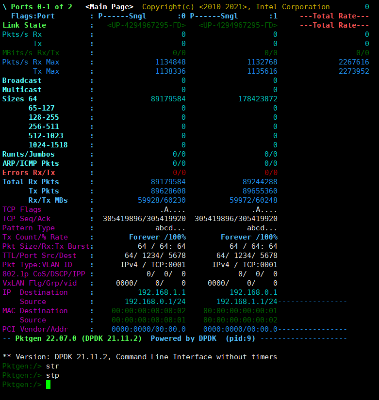
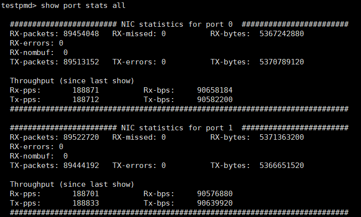
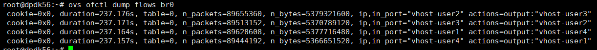
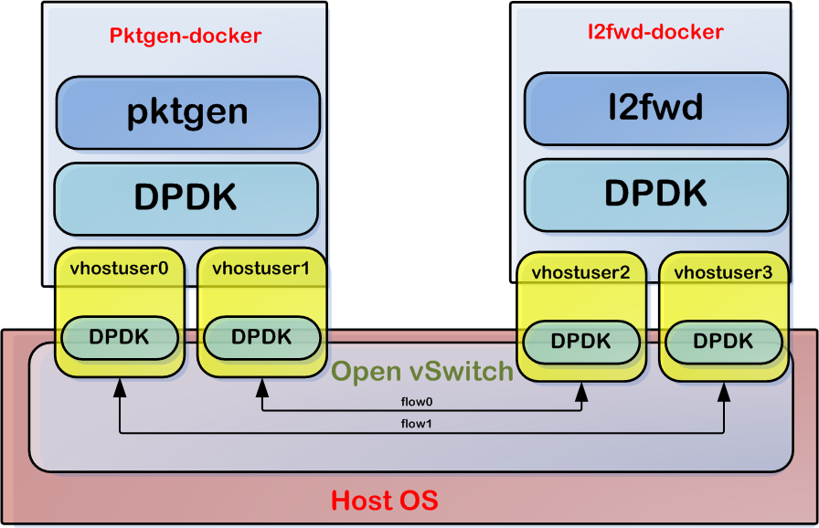
run pktgen
docker run -it --rm --privileged \
-v /dev/hugepages:/dev/hugepages -v /var/run/openvswitch:/var/run/openvswitch amwork2010/pktgen:22.07
pktgen -c 0x19 --main-lcore 3 -n 1 --socket-mem 1024 --file-prefix pktgen --no-pci \
--vdev 'net_virtio_user1,mac=00:00:00:00:00:01,path=/var/run/openvswitch/vhost-user1' \
--vdev 'net_virtio_user2,mac=00:00:00:00:00:02,path=/var/run/openvswitch/vhost-user2' \
-- -T -P -m "0.0,4.1"
发包验证
在pktgen端执行：
# 在pktgen中设置速率为10%，更具体的速率设置可以通过tx_cycles设置
# 端口0共发送100个包，端口1发送200个
Pktgen:/>set all rate 10
Pktgen:/>set 0 count 100
Pktgen:/>set 1 count 200
Pktgen:/>str
set all rate 10
set 0 count 100
set 1 count 200
str
总结 本次实践主要还是集中在OVS上面的container App的互通以及container内部对dpdk的支持，分别验证了在container内部运行testpmd和l2fwd来进行报文转发。其中，dpdk app的运行模式可以为后续cneos平台server docker化提供一定的技术指导作用。 如果从更系统化的层面来考虑docker结合ovs以及dpdk的使用，更通用的使用场景应该是这样的：在ovs的南向通过dpdk pmd和硬件平台上物理nic的PF或VF绑定，高速收发报文；在ovs的北向，通过virtual device和docker container来共享收发报文，进行上层业务的处理。 南北向之间的流量需要配置flow table来指导转发。流量示意如下图所示：
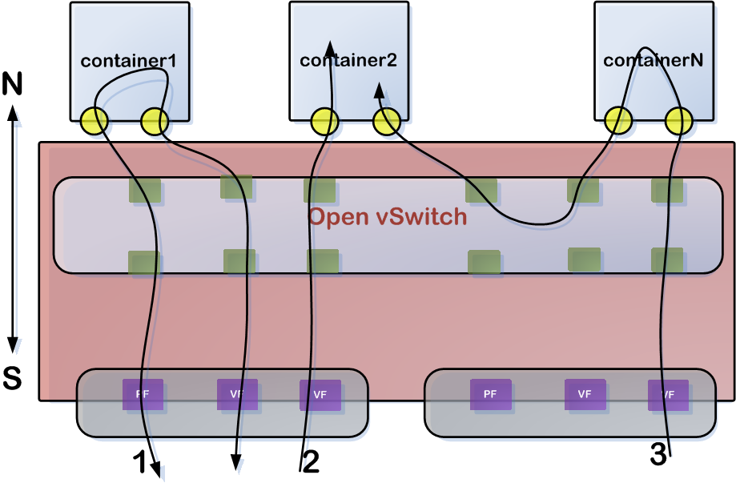 流量从物理port流入，到达OVS查找流表送入到串联检测类container1(如NF，IPS)中，container1处理完后再送回流表，再次查找流表找到物理口发送出去 流量从物理port流入，到达OVS查找流表送入到检测类container2中(如WAF) 考虑到有多个安全container app，流量串行通过containerN,container2; 实际上，container之间的数据交互还有别的实现方式，如docker天然支持容器互联技术，这块还有待进一步确定实际方案
https://github.com/intel/SDN-NFV-Hands-on-Samples/tree/master/DPDK_in_Containers_Hands-on_Lab
ovs+dpdk-docker实践
https://huaweicloud.csdn.net/635669a1d3efff3090b5e5af.html?spm=1001.2101.3001.6661.1&utm_medium=distribute.pc_relevant_t0.none-task-blog-2~default~BlogCommendFromBaidu~activity-1-78589592-blog-77887910.pc_relevant_vip_default&depth_1-utm_source=distribute.pc_relevant_t0.none-task-blog-2~default~BlogCommendFromBaidu~activity-1-78589592-blog-77887910.pc_relevant_vip_default&utm_relevant_index=1
https://datawine.github.io/docker-ovs-dpdk-vnf-exp.html https://blog.csdn.net/me_blue/article/details/78589592 https://www.youtube.com/watch?v=hEmvd7ZjkFw&list=PLg-UKERBljNx44Q68QfQcYsza-fV0ARbp https://www.slideshare.net/MichelleHolley1/dpdk-in-containers-handson-lab
https://doc.dpdk.org/guides/howto/virtio_user_for_container_networking.html 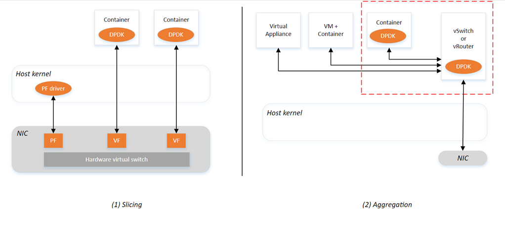 上图(1) 方案中需要NIC支持SR-IOV功能，物理NIC支持的VF个数也依赖于硬件资源；每个container的接口独占VF，多个VF共享下面的一个PF。基于这种方案实现的container，无论对硬件的依赖和绑定，还是container的迁移，支持性都做得不够好。 上图(2) 方案中需要在host中运行vswitch或者vRouter来将上层的containers和底层的物理NIC解耦，只要vswitch（当前比较流行的OVS+DPDK，将OVS放在用户态来实现）的性能足够，一样可以实现高性能的container app了。 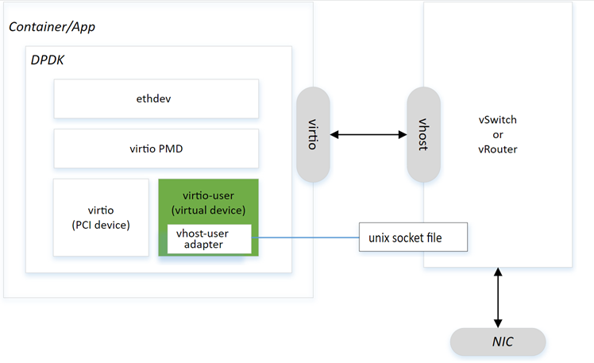 基于以上比较，本次预研主要选取第二种方案来实现，方案中使用virtual device(包括virtio-user和vhost-user backend）来实现高性能的container App 或者IPC。Virtio使用共享内存的方式来收发报文，传统的VM可以通过qemu来共享vhost后端的物理地址，但对container而言，作为系统的一个进程，使用这种方式则比较难。目前的思路是只能使用DPDK初始化的hugepages来进行内存共享。所以，要在container中使用dpdk，必须要分配足够的大页内存，且不同container在使用共享内存时要能够分区使用，避免地址重复。
date: 2023-02-04
VMWARE 加网卡
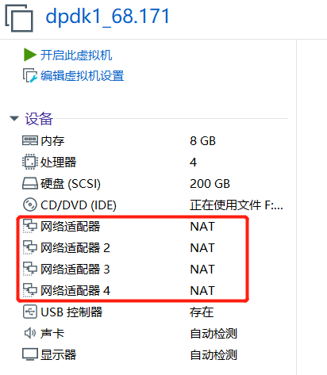
编辑对应的 dpdk1.vmx，修改所有e1000为vmxnet3 ，多队列网卡
ethernet0.virtualDev = "vmxnet3"
ethernet0.wakeOnPcktRcv = "true"
...
ethernet1.virtualDev = "vmxnet3"
ethernet1.wakeOnPcktRcv = "true"
ethernet2.virtualDev = "vmxnet3"
ethernet2.wakeOnPcktRcv = "true"
ethernet3.virtualDev = "vmxnet3"
ethernet3.wakeOnPcktRcv = "true"
[root@rocky91 ~]# dmesg |grep ens
[ 0.794713] ACPI: Added _OSI(3.0 _SCP Extensions)
[ 5.571790] vmxnet3 0000:1b:00.0 ens256: renamed from eth2
[ 5.590331] vmxnet3 0000:0b:00.0 ens192: renamed from eth0
[ 5.615548] vmxnet3 0000:13:00.0 ens224: renamed from eth1
[ 5.632393] vmxnet3 0000:1b:00.0 ens256: intr type 3, mode 0, 5 vectors allocated
[ 5.632872] vmxnet3 0000:1b:00.0 ens256: NIC Link is Up 10000 Mbps
[ 5.716301] vmxnet3 0000:0b:00.0 ens192: intr type 3, mode 0, 5 vectors allocated
[ 5.716640] vmxnet3 0000:0b:00.0 ens192: NIC Link is Up 10000 Mbps
[ 5.774846] vmxnet3 0000:13:00.0 ens224: intr type 3, mode 0, 5 vectors allocated
[ 5.775629] vmxnet3 0000:13:00.0 ens224: NIC Link is Up 10000 Mbps
[ 6.497363] IPv6: ADDRCONF(NETDEV_CHANGE): ens224: link becomes ready
[ 6.497983] IPv6: ADDRCONF(NETDEV_CHANGE): ens256: link becomes ready
[root@rocky91 ~]# cat /proc/interrupts |grep ens
75: 7 67 0 185 IR-PCI-MSI 5767168-edge ens192-rxtx-0
76: 3 1 45 0 IR-PCI-MSI 5767169-edge ens192-rxtx-1
77: 0 11 0 9 IR-PCI-MSI 5767170-edge ens192-rxtx-2
78: 1 42 0 105 IR-PCI-MSI 5767171-edge ens192-rxtx-3
79: 0 0 0 0 IR-PCI-MSI 5767172-edge ens192-event-4
[root@dpdk1 ~]# cat /proc/interrupts |grep ens vmxnet3 (4CPU) 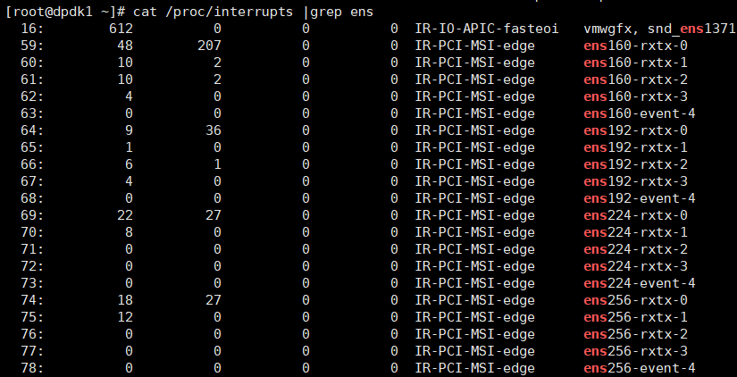
1G大页
vi /etc/default/grub
#GRUB_CMDLINE_LINUX="default_hugepagesz=1G hugepagesz=1G hugepages=2 isolcpus=2-3 iommu=pt intel_iommu=on"
GRUB_CMDLINE_LINUX="resume=/dev/mapper/rl_rocky91-swap rd.lvm.lv=rl_rocky91/root rd.lvm.lv=rl_rocky91/swap default_hugepagesz=1G hugepagesz=1G hugepages=4 isolcpus=2-3 iommu=pt intel_iommu=on"
grub2-mkconfig -o /boot/grub2/grub.cfg
reboot
dmesg | grep -e DMAR -e IOMMU
cat /proc/cmdline | grep iommu=pt
cat /proc/cmdline | grep intel_iommu=on
[root@rocky91 ~]# cat /proc/meminfo |grep Huge
AnonHugePages: 4096 kB
ShmemHugePages: 0 kB
FileHugePages: 0 kB
HugePages_Total: 2
HugePages_Free: 2
HugePages_Rsvd: 0
HugePages_Surp: 0
Hugepagesize: 1048576 kB
Hugetlb: 2097152 kB
[root@rocky91 ~]# cat /sys/kernel/mm/hugepages/hugepages-1048576kB/nr_hugepages
4
[root@alma91 ~]# mount | grep huge
hugetlbfs on /dev/hugepages type hugetlbfs (rw,relatime,pagesize=1024M)
使用大页
mkdir /mnt/huge
mount -t hugetlbfs pagesize=1GB /mnt/huge
通过在/etc/fstab文件中添加以下行，可以使挂载点在重新启动后永久存在：
nodev /mnt/huge hugetlbfs pagesize=1GB 0 0
reboot
[root@dpdk1 ~]# mount|grep hugetlbfs
hugetlbfs on /dev/hugepages type hugetlbfs (rw,relatime)
nodev on /mnt/huge type hugetlbfs (rw,relatime,pagesize=1GB)
yum install -y dpdk dpdk-devel dpdk-tools
[root@rocky91 ~]# dpdk-devbind.py -s
Network devices using kernel driver
===================================
0000:0b:00.0 'VMXNET3 Ethernet Controller 07b0' if=ens192 drv=vmxnet3 unused= *Active*
0000:13:00.0 'VMXNET3 Ethernet Controller 07b0' if=ens224 drv=vmxnet3 unused= *Active*
0000:1b:00.0 'VMXNET3 Ethernet Controller 07b0' if=ens256 drv=vmxnet3 unused= *Active*
[root@rocky91 ~]# ip link set ens224 down
[root@rocky91 ~]# ip link set ens256 down
[root@rocky91 ~]# modprobe vfio-pci
[root@rocky91 ~]# dpdk-devbind.py -s
Network devices using kernel driver
===================================
0000:0b:00.0 'VMXNET3 Ethernet Controller 07b0' if=ens192 drv=vmxnet3 unused=vfio-pci *Active*
0000:13:00.0 'VMXNET3 Ethernet Controller 07b0' if=ens224 drv=vmxnet3 unused=vfio-pci
0000:1b:00.0 'VMXNET3 Ethernet Controller 07b0' if=ens256 drv=vmxnet3 unused=vfio-pci
[root@rocky91 ~]# dpdk-devbind.py -b vfio-pci 0000:13:00.0
[root@rocky91 ~]# dpdk-devbind.py -b vfio-pci 0000:1b:00.0
[root@rocky91 ~]# dpdk-devbind.py -s
Network devices using DPDK-compatible driver
============================================
0000:13:00.0 'VMXNET3 Ethernet Controller 07b0' drv=vfio-pci unused=vmxnet3
0000:1b:00.0 'VMXNET3 Ethernet Controller 07b0' drv=vfio-pci unused=vmxnet3
Network devices using kernel driver
===================================
0000:0b:00.0 'VMXNET3 Ethernet Controller 07b0' if=ens192 drv=vmxnet3 unused=vfio-pci *Active*
取消绑定:
dpdk-devbind.py -u 0000:1b:00.0
dpdk-devbind.py -b vmxnet3 0000:1b:00.0 ##绑回vmxnet3
dpdk-testpmd 测试失败！ dpdk-testpmd 测试失败！未查明原因！ dpdk-testpmd 测试失败！
# top 会看到1cpu 100%us
show port stats all
./build/examples/dpdk-helloworld -l 0-3 -n 4
./build/app/dpdk-testpmd -l 2-3 -m 4096 -n 4 -- -i -a --forward-mode=rxonly --rxd=4096 --txd=4096 --rss-ip ## 选到3
./build/app/dpdk-testpmd -l 1-2 -m 4096 -n 4 -- -i -a --forward-mode=rxonly --rxd=4096 --txd=4096 --rss-ip ## 选到2
./build/app/dpdk-testpmd -l 0-3 -m 4096 -n 4 -- -i -a --forward-mode=rxonly --rxd=4096 --txd=4096 --rss-ip ## 选到1
./build/app/dpdk-testpmd -l0-3 -- -i --nb-cores=2 --nb-ports=2 --total-num-mbufs=2048
start
stop
自己build好用！
yum -y groupinstall "Development Tools"
yum install -y python3 python3-pip
pip3 install meson ninja pyelftools -i https://pypi.tuna.tsinghua.edu.cn/simple
yum install -y numactl numactl-devel
export http_proxy=http://10.1.1.12:8118
export https_proxy=http://10.1.1.12:8118
wget http://fast.dpdk.org/rel/dpdk-22.11.1.tar.xz
tar Jxvf dpdk-22.11.1.tar.xz
cd dpdk-stable-22.11.1
meson setup -Dexamples=all build
cd build
ninja
ninja install
自己build好用！
date: 2023-02-04
https://www.qemu.org/download/
## centos7 升级 qemu
## https://www.qemu.org/download/
## qemu 新版本要求gcc 7.4 以上，CentOS官方源自带的gcc是4.8.5
yum -y groupinstall "Development Tools"
yum install -y python3 python3-pip
## centos8: yum install -y python39 python39-pip
yum install -y numactl numactl-devel
pip3 install meson ninja pyelftools -i https://pypi.tuna.tsinghua.edu.cn/simple
yum install -y glib2 glib2-devel pixman-devel zlib zlib-devel
## 安装RedHat的软件集合（SCLs）
yum install centos-release-scl -y
yum search devtoolset
devtoolset-10
devtoolset-11
devtoolset-7
devtoolset-8
devtoolset-9
yum remove gcc -y
## 安装GCC8
yum install devtoolset-8
## or 安装GCC11
# yum install devtoolset-11
## 临时生效，执行：
scl enable devtoolset-8 bash
# scl enable devtoolset-11 bash
gcc -v
gcc version 8.3.1 20190311 (Red Hat 8.3.1-3) (GCC)
[root@vps-8 ~]# which gcc
/opt/rh/devtoolset-8/root/usr/bin/gcc
## 永久生效，执行：
## echo 'source scl_source enable devtoolset-8' >> ~/.bashrc
## BUILD QEMU
# wget https://download.qemu.org/qemu-7.2.0.tar.xz
wget https://download.qemu.org/qemu-6.2.0.tar.xz
tar xvJf qemu-6.2.0.tar.xz
cd qemu-6.2.0
./configure
make -j 24
make install
/usr/bin/kvm -> /usr/libexec/qemu-kvm
/usr/local/bin/qemu-system-x86_64
[root@vps-22 ~]# /usr/libexec/qemu-kvm --version
QEMU emulator version 1.5.3 (qemu-kvm-1.5.3-175.el7_9.6), Copyright (c) 2003-2008 Fabrice Bellard
[root@vps-8 ~]# /usr/libexec/qemu-kvm --version
QEMU emulator version 2.6.0 (qemu-kvm-rhev-2.6.0-29.el7), Copyright (c) 2003-2008 Fabrice Bellard
[root@vps-8 ~]# /usr/local/bin/qemu-system-x86_64 --version
QEMU emulator version 6.2.0
Copyright (c) 2003-2021 Fabrice Bellard and the QEMU Project developers
[root@vps-9 ~]# /usr/local/bin/qemu-system-x86_64 --version
QEMU emulator version 7.2.0
Copyright (c) 2003-2022 Fabrice Bellard and the QEMU Project developers